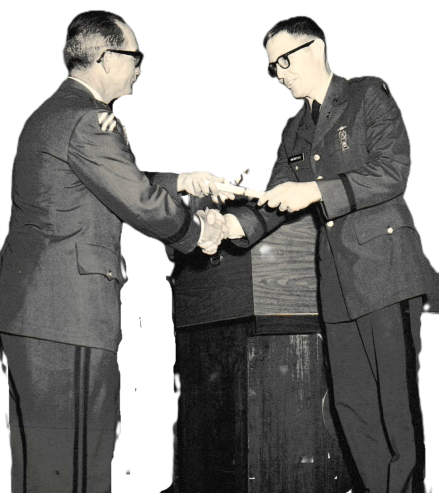

Pat's Childhood
In 1933, the Bird family moved from Austin back to Birdville, Fort Worth, TX. In May 1939, Myrtle graduated from Riverside High School, in Birdville, Tarrant County, TX. Earl enlisted in the United States Army on July 6, 1940, in Dallas, Dallas County, TX as a Private for the Term of Enlistment for the Philippine Department. By 1940, Myrtle was employed as a Management analyst. She received her B. S. from TX Christen University. Albert attended Riverside High School, in Fort Worth, Tarrant County, TX. When Albert was seventeen (March 1942), still in school and working for BIRD Plumbing and Heating, Albert joined the Merchant Marines.
In 1943, Gus Bird moved his family to a farm near Hope, Arkansas. In 1945, while on leave from the Merchant Marines and visiting his Bird family, who had move to Arkansas, Albert was drafted into the US Army. According to his Military Draft Records.
E Loraine, Haltom City, TX (~1954-06 — 1961-02)
I started dating Marilyn Turner, one date; I brought Marilyn back past her father's curfew, and some Church of Christ folks guard their daughters close. When I called Marilyn for a second date, she explained I was on her father's "never' list, but her friend, Pat Bird, might welcome my call. Patricia Bird and I began dating the last semester of high school. I no longer had Brother Bob for guidance on dating, he was living in Salt Lake City, UT, but he did very kindly leave me his '55 Studebaker Coupè. I relied on Mike Fox for experienced help; he recommended The House of Molè in the TCU area. The food made a strong impression on both Patricia and my wallet. Closer was the Italian Inn on Lancaster Avenue, Mike's mother had managed the lease.
Pat learned to drive, using Bob's '54 Lincoln from Bob's slowly declining used car lot. It was the only car with automatic transmission. She thought that best rather than the added complication of a manual transmission. Later she mastered the stick shift and clutch control in the Studebaker.
z322 ✓
1960
1961-02-25 {Fort Worth Star telegram}
Miss Patricia Bird Married To Walton Bronstad in Church
Miss Patricai M. Bird and Gilbert Walton Bronstad were married at 8 p. m. Friday at Asbury Methodist Church by the pastor: Rev S. A. Baker.
Parents of the couple are Mrs. Jeff A. Bird of 3312 Meadow Oaks Dr. and Mr. and Mrs. Clyde P. Bronstad of 4710 E. Loraine.
Miss Marian Kay Clark was the bride's only attendant and Michael Fox was best man. Jeroll Shivers and David Bird ushered.
The bride's street–length gown was of white silk organza over taffeta. The molded bodice had a jewel neckline and long–sleeves. She carried a bouquet of split carnations and camellias. The bride was given in marriage by her brother, Earl A. Bird.
At the church reception, Miss Betty Bird, and Mmes. Dick Bryant and Jeroll Shivers, all sisters of the bride, and Miss Bette Bronstad, the bridegroom's sister, were in the house party.
When the couple left on a trip to Arkansas, the bride wore a blue wool knit suit with black accessories. They will reside at 1554 N. Sylvania.
The couple are graduates of Birdville High School. The bridegroom is presently a student at Arlington State College.
After high school, Pat had begun working at Edison Jewelers in downtown Fort Worth. Later she got a much better job with Bell Telephone Company, 900 block of Throckmorton St. We had agreed she would help me through college, then I would work and help her through college.
Pat and I wed February 24, 1961. We had been dating Friday nights for two years. I had wanted a simple, civil ceremony, but Mother would not hear of it, she organized a bigger event at the Asbury Methodist church she, Bette and Clyde attended. Aunt Marie came from Cranfills Gap, Homer and Travis from Denton, Ina Jo and family from Odessa. Annie Joy from Wichita Falls. Many from Pats family came too, her Mother many sisters and brothers. All the elements of families merging. Before the wedding, Clyde, who had never discussed sex with me, presented me with a large box of lambskin condoms, said "always use these", and walked away in embarrassment. Silently saying, "finish school before starting a family."
We were married on a Friday, had an abbreviated honeymoon on the weekend. I was unable to complete husbandly duties, unable to inflict pain. My family doctor, Dr Josephson dealt with the problem of pain; I've always preferred to think it was a minor surgical procedure; Pat never contradicted that. We lived in a garage apartment on Sylvania Ave, Fort Worth. It was just blocks from Pat's sister Margaret Norwood and my co-op carpooler, Gerald M.
Spring work semester '61, the Fort Worth Co-op 6 were dispersed. I went to the LTV electronics division. I worked weeks with June Mangrum learning on the job flow charting. which he applied to work flow, aiming toward better time use. The process must not have been too extensive for I spent the next few weeks in service to a massive Xerox machine cutting, collating and maintaining the flow of copied engineering drawings. Next I went to a vibration test lab where electronic and electric equipment had the bejesus shook out of it to insure it could endure the stresses of fighter aircraft maneuver. Some senior engineers spent a lot of time chasing their secretaries. One secretary vividly chased James J Ling on the rare time he showed up.
Summer, this time, co-op students took both summer semesters. all math and physics or engineering. No electives.
Where we lived, East Fort Worth, both of us commuted to work. We decided to rent an apartment near ASC campus to eliminate (for me, not her) the time consuming cost of commuting to school.
z310 ✓
This was an upstairs garage apartment. The owners home was on the same lot so we shared the 2 car garage below.The fall work semester of 1961, I spent at a drafting table drawing what, I no longer recall. It was a small, bored group. One man with an EE degree from LSU spent hours, using all the colored pencil colors Vought could procure, to validate a spaghetti wiring diagram for a missile launch sight. Work an assiduous 8th grader could perform.
That began to gnaw on me, The co-op program administrator, an alumnus of Purdue University , publicly anointed a Purdue co-op student with a choice assignment at Vought. Certainly Purdue had better standing than ASC, a two year college just stepping up to a full four years. Engineering Schools had a pecking order, a hierarchy, a class system, and I'd started out with limited academic lineage. ASC science, mathematics and engineering courses were tough, I didn't like the idea of getting my degree, and spending a working life validating others work with a box full of colored pencils.
This would be a future theme, "paying to get on the Merry-Go-Round, only to realize the brass ring was little more than a lure for a fish." A MacGuffin to keep my life story contained by the organization.
Anne Whaling kept in touch, asking me to visit her during her office hours where we might discuss ideas at length; she often gave me books she thought germane to our talks: David Riesmann's The Lonely Crowd, Albert Camus' The Rebel, William H. Whyte's The Organization Man. All tough but engaging reads. I had no resources for T. S. Elliot's The Waste Land., nor do I wish to work on it, having found John Carey's illustration of Elliot's character repellent.
Spring school semester '62 I doggedly pursued engineering with 20 credit hours of demanding engineering at 2.9 /3 gpa. But my motivation was spent, the 'brass ring' began to look like a trigger in a cage trap.
Anne encouraged me to pursue what interested me, while I found the work of Sociologists interesting, ASC had no Sociology department. Psychology was the closest and I had been distantly intrigued by Bob's discussions of Psychology with Mother. So I simply phoned Till Philips, saying I wasn't returning; I did not show up at Vought for the summer work semester, I bolted for a race to complete a Psychology major ( 33 hours plus 22 of other requirements) by the end of the next summer semester.
As I write this I'm struck by the recklessness of burning my bridges behind me. How ever did I persuade Patricia of what I was doing? I was shifting most of the burden of income on her; I did resume slipping papers nights at the Star Telegram, but that was a small stream. At writing time I have the disadvantage of knowing I was just trading one carousel for another, lured by a different brass ring after deprecating the first. But I lack now the youthful risk-taking, the illusion of promise and the promises of Anne that I would be well received in the academic world, for that is where I had to go on this new carousel. For Anne, it was understandable, much of her adult life she had feared, if not actually felt rejection for her face disfigured by a large port wine stain birth mark running across her forehead, eye and cheek. Yale did receive her well, and new make-up made her employable in a very public setting, the college classroom.
Anne connected me with Garvin McCain, chairman of the Psych department. I started as a lab assistant, running McCain's white lab rats. Besides Psych courses, there were more elective courses, the subtext of the effort was to find an area within the umbrella of Psychology that grabbed me, a compelling interest that lit my fire. By summer '63 there was no ignition, not even smoke, just creeping depression.
During the course of this run, with considerable guidance from Anne, I had applied to the universities of Minnesota, Wisconsin and Michigan, as well as apply for a National Science Foundation fellowship. All accepted me, but the NSF grant was for Michigan, so Michigan it was. The NSF Fellowship was a great prize, but it could not fix the great problem. I was going unlit, hoping for ignition in the hotter academic flames of Ann Arbor. I had no plan B, I was on the path I'd given my family to understand, and Anne had extended herself so very far given her rather timid nature. Besides, I'd never lived in the Midwest and I might be able to visit Bob who lived in upper Wisconsin.
z226 ✓
Michigan was exhilarating and intimidating; the state was flush after almost two post war decades of supplying America's endless appetite for cars. Our University of Michigan, married housing studio apartment was cramped and pricey. We paid appreciably more for considerably less. Our neighbors included New York City Jews, Japanese incommunicables, and Michigan undergraduates. We got to know Roz and Richard Zelman, Ann and Ken Mazlen, Paul and Mary Ellen LaBotz, Elijah and Avanell Brown and Moises and Miriam Bicas. The Zelmans were next door so we got to know them better face to face and through the cinderblock wall.
My Psych graduate student cohorts were formidable: graduates of Harvard, Yale, Princeton, Dartmouth, Penn State, Cal Tech, Berkeley, … All seemed to have come lit with a passion for their chosen field within the Psychology umbrella. I was a nominal experimentalist and assigned to the editor of the Journal of Experimental Psychology, Arthur W Melton . Many Sophomores satisfied their psych class requirement being subjects in a nonsense syllable learning experiment I ran for Melton. It was my class too, learning to apply the strictures of experimental design. It was the basis of my Master's degree.
Pat got a job at the Veterans Administration Hospital transcribing medical notes. In student gatherings in our apartment or others, Pat began to feel more and more left out, her lacking undergraduate credentials left her feeling inadequate. I was no bastion of adequacy in my Quixotic quest for ignition. This was the first time Pat had been away from her family and friends, 1200 miles away. When I was not in classes, my face was buried in a book. Clara, Pat's Mother did come for a stay in November, but the apartment was small for two and Clara soon returned by rail to Texas where it was warmer. Pat wanted a companionate cat and a college degree.
No pets in University Housing and out-of-state tuition was prohibitive. Pat would not be a Michigan resident until September, but we could have a cat on the local housing market which opened up in summer. So we relocated to the upstairs of 1400 Packard St., Ann Arbor, MI and got Toby, a tiger moggy.
Toby became an indoor-outdoor cat, with the kitchen window open, he could hop to the porch roof and use the tree to gain the ground. This worked for a while until the land lady discovered she could no longer live with her daughter and returned to live in the upstairs room that had initially housed just her furnishings. We found we didn't want to live with her, helpful, though she was, helping us with our arguments from the privacy of her room, or telling us where Walt's sock was. Toby moggy went missing so we had no reason to stay in private housing and returned to University Housing, Apt 420 this time.
My grades declined, my imposter syndrome verged nearer validity and became intolerable; I resigned my NSF fellowship. No longer a U M student, Pat and I had to move once again out of student housing, this time to 112 W Jefferson, Ann Arbor, MI. A series of part time jobs kept us housed, fed and paying tuition for Pat at EMU. Ulrich's Books, (where I met Bill Moran) Substitute teaching in Ann Arbor and Ypsilanti public schools. It was unthinkable to return to Arlington and finish my engineering degree, it would have felt too much like a personal disgrace, and it would have been a public rebuke to Anne Whaling.
The job search was mostly in the government sector, I applied to the C.I.A., Department of state and Social Security Administration in Chicago. The CIA was interested enough to give me my first plane flight to Alexandria, VA, but I didn't do well enough in the interview and lie detector test. They just flew me back home. Social Security in Chicago pay sounded appealing, Pat could go to U Illinois, Navy Pier and we'd never lived in a large city, so we accepted. The State Department later accepted me, but I'd already accepted SSA located within the Loop
z310 ✓
For a boy who'd gotten his bearings in Cranfills Gap, TX, Chicago was overwhelming. Ostensibly orderly in it's street pattern, it was culturally rich, a bizarre bazaar, ethnic quilt. Pat found us an apartment in a largely Jewish neighborhood. The extended family beneath us insisted we buy carper for our 3 room apartment; the elderly in the family had survived the Holocaust but were agitated with footsteps overhead. We could barely afford Pat's tuition after rent and expenses ate most of what had seemed a handsome salary. It wasn't handsome, one needed it for Chicago's prices.
The job was titled "Claims Authorizer Trainee". There were about a dozen of us, mostly from the Midwest. SSA gave us months of training in the legal aspects of the job. Many entitlements had to do with family relationship to the insured, and legal standing varied from state to state. A common law wife could be OK in Ohio, but not in Nevada. We were reviewing the work of the field offices and we, at our level of Claims Authorizer trainees, were in turn reviewed by a higher level. Enough of my reviews were kicked back that I began to think I had no mind for Law. Still after 60 years, one 1966 case sticks in my mind. An Army Captain died in Viet Nam when his shower exploded. At the time, I was astonished that the United States could not provide safe shower equipment for our men in the field. Chicago was too far from Viet Nam for me to have heard the word fragging or indeed know of it's long and very human heritage.
Anti-war protests had parading within the Loop, protesting the growing U S involvement in Nam, but that was half a world away. It was of little concern to me. —— until my Tarrant County Texas Draft Board reassured me that I was not forgotten. In fairness the law required me send them forget-me-not notices for every move. For years I had skated well away from the draft, relying first on student deferments, then on marital status deferments, but I'd left student deferment behind, and the value of marital deferment was plucked away as the Viet Cong proved tough and resilient.
I was a little doubtful of the need to fight in Vietnam, but what did we have a government for? Did we not select the best and the brightest, to borrow JFK's (maybe Ted Sorenson's) term.
Would not the best and the brightest navigate the ship of state surely and truly through the moral, political, and economic shoals? Had I not enjoyed the blessings of my country, was it not my obligation to serve when my country needed, even if that need was, paradoxically, in a trans Pacific, 3rd world country I knew no more of than it's location on a map? Had not my Father, my uncle, my cousin served when called?
There was no way out, Stan Piasecki, my supervisor told me there was no exemption for Federal employees. I began jogging in the mornings around our North Chicago block, hoping to build up the respiratory capacity that had long been my physical shortcoming, little realizing that asthma could be my way out.
There was no way to put Pat through college on the $91 /Month pay of an E-1 enlisted man. The best alternative available was Army OCS; the Army required but 9 more months of active duty; the Air Force, Navy and Coast Guard wanted more years of active duty service. So, I "volunteered", becoming "RA" (regular Army) rather than US (inducted).
The draft notice freed us from rental lease obligations. Bob, who lived about 200 miles north in Appleton WI, brought a trailer down to hold our furniture at his house while I did my Army duty. I still feel guilt about his taking the heavy end of the sofa down 3 levels of fire escape to get it to the trailer. Pat had to drop out of Chicago Circle. We flew to Fort Worth so that Pat could live with my parents and go to University of North Texas . Clyde provided Pat with his (Bob's ?) Oldsmobile for the 60 mile round-trip commute. I flew back to Chicago to interview a Board of Officers to see if I could enter OCS. By no means was it enough to say, I want to become an officer, many times the Army reviewed it's candidates asking, "Do we want you?" Asked to chose 3 Army branches, one of which had to be a combat branch, I chose Artillery, Ordnance and Quartermaster. My eye glasses probably excluded Artillery, the board plugged me into the Ordnance path. Combat branches were most in harm's way.
z318 ✓
Richard "Froggy" W. Bland II , Garth R. Boyd, Lawrence J. Cianciola, James T. Endean , Donald L. Fast, Michael R. Perme , and Thomas J. Stenhouse went together with me the nine months through Basic, AIT and OCS . It's hard to forget our drill sergeant, Sgt Pesta, he was with us 6, some times 7 days per week, the most immediate part of the Army machinery of turning independent civilians into obedient soldiers. Some of this was "Drill and Ceremony" practice, repeating in concert choreographed movements like "Right Shoulder Arms" until habituation, — mindless obedience.
wrote Sun. Oct. 16, 1966 of mailed goodies, signature card, car search, Dr. Zhivago, Bette and Bob
4710 E Loraine
Fort Worth, TXDear Wally,
I feel much better after having talked to you. Cookies and cakes will begin arriving shortly – I have to go to the grocery store first. I’m sending this card from the bank for you to sign, sign both sides. We don’t have any check charges there since I am a student – also I’ll send you a few checks. Right now, the balance is $306.00, but if we get a car tomorrow, it will be zero – then after your check is deposited you can feel relatively free to write small checks.
We have several cars to look at – a ‘56 Chevy and a ‘59 lark; both have stick shift.
I am enclosing a letter I wrote Friday.
We all seem to be getting along fine here. Bette and I argue sometimes, but it’s just in fun, I think.
We saw Dr. Zhivago (spelled. Wrong, I realize) last night. Bette cried for about 30 minutes after it was over. I would have hated to be with her the first time she saw it.
Bob called said he won’t be in New Jersey. I gave him your address so maybe you’ll hear from him soon. If you don’t mind my long, overly detailed letters, I’ll write a lot. I do miss you a lot. (Bette is doing her nightly Lock up. She tried to teach me how, but it’s so involve, I can’t learn it.) She always checks this room in the morning to make sure I haven’t been murdered. I’m getting scared.
Please write. (I hate to sound like a beggar, but I feel lousy when I don’t hear from you.) (Calling’s nice too. )
I love you,
Pat.
4710 E Loraine
Fort Worth, TXDear Wally,
I have an awful cold ear, teeth, head, and nose aches. I may go to the doctor today – in fact, I just made an appointment.
I told you I got the check from University of Illinois, didn’t I? I’ll put it in the bank today. Do you need money? When you do, just tell me. I got my hair cut off very short – hairline in back and long on the sides. It looks cute.
Carolyn spent the night with me Saturday and since Dick is going to work all night Friday, I’ll spend the night out of there.
Mary made a suit that was too big for her – just fits me so we are working out some kind of trade.
Hudson, Annie, Joy, Sharon and Al were here yesterday – we all went to lunch. I do do some things around the house, but not so much as I expected to though. I planned on cleaning up the whole place. Well, I didn’t get that far. Nobody wants to part with even an old Magazine. We are going to clean up the sewing room soon.
Your pictures were horrible but I’m glad you sent them. How did they manage to make such awful ones – at first, I thought they must be one of your buddies.
Eve sent a letter – said she told Mike to write. I just wrote a letter to Bob – finally.
I hope you miss me terribly.
I love you,
Pat.
4710 E Loraine
Fort Worth, TXDear Wally,
I went to the doctor – he said I had a sinus infection, gave me a shot in the rear (it still hurts) and a prescription. I feel lots better now. I didn’t get the check to the bank. It was raining when I left the doctors office and the windshield wipers on the car don’t work properly. They work, then stop, then work again, and stop. (They are off more often than only)
Your dad checked them, but couldn’t find the trouble, so he’ll take it to the garage.
For that suit of Mary’s, I traded the material I bought for a jumper.
I have to do French and economics tonight. Bette seems to enjoy Russian. There is a Russian boy in her class who helps the whole class with the work. They meet at different houses twice a week. I think Bette enjoys the boy, Nick, more than the lessons though. He’s all I’ve heard about these past couple of weeks. She wants to major in Russian, but since Arlington only offers it as a Minor, she will have to finish somewhere else.
I really do plan to come up there. I can work a couple of days a week to pay my way. It’s really lonely here. Also, I’m going to send for catalogues from U of Maryland for the spring semester. I’ll be a camp follower. But I would like to come up before then so please say I can – for a weekend – Thanksgiving or Christmas – a Christmas present. (That is if you can’t come Christmas) – January is too far away.
How do you like the guys you’ve met so far? How much longer is basic training?
I don’t know if you heard from Bob or not, but your folks talked to him last night. He said his job is still hanging on – he still doesn’t know for how long though.
Do you really read all these letters? I could write one really cute, clever letter a week, but I seem to have to write every night or I can’t sleep for fear you’ll be disappointed. I love to get yours.
Old Toby‘s fine – he’s got one side of his face shaved – no whiskers or fur; Bette calls him scab face.
I hope your cold doesn’t bother you any longer and I’m sorry you’re sore for all the training – by the way, what do you study in the classroom? Are you still an assistant platoon leader? And, how is KP?
Guess I’d better study now.
I miss you a lot – more each day rather than growing used to your absence.
Love, Pat.
4710 E Loraine
Fort Worth, TXDear Wally,
I’m so glad you miss my daily letters – loving as they are.
You still haven’t gotten the fruitcake! There are also apricots and dates on the way. When will you be through with basic?
I spent the night with Potsy. Just watched TV went to bed, got up and left - after breakfast of course. Tonight I am babysitting over at Mary’s. I hope you will call then. I called Kelly Girl about working three days a week – she said it would be terribly hard to find work for those separated days.
You got a bond today.
The car cost $275.00 (it was $375.00, but Hudson gave me $100.00 ) and I have $184.52 in the bank. So don’t worry about me not having money – I could send you some. (I will have to pay insurance for car out of that, but it will be only $56.00)
I miss, miss you. I got out some of your old baby pictures and put them on the bulletin board. You’re cute. I checked at NTSU for a New York directory, but they didn’t have one. I’ll go downtown library today.
I’m sorry you have to put up with all that in the army – but maybe, after all that, it will be easier to put up with me. I wouldn’t mind your griping at me if you were just here.
Everyone here is fine – my cold is gone. Mama is in Florida. You never said if I could send you magazines or not or books. I’m hurrying so I can get to post office. I love your letters – I love you.
Pat.
Past American armies have been beset by one of the Abrahamic religions (Judaism, or Christianity). The Ten Commandments proscription against killing is strong and direct. Few young men are schooled in the theological work-arounds that have let nation shed blood as freely as they did before adopting the religions. It's been such a difficult problem though. Too many young men failed to fire their weapons at the enemy in past wars. The Basic Training Brigade was not prepared to school recruits in theological exceptions permitting a flood of enemy blood, their forte was mind-erasing-repetition: we were made to scream "KILL" as we thrust our rifle bayonets into the straw dummies. Again and again unto hoarseness.
4710 E Loraine
Dear Wally
Fort Worth, TX
Tuesdays and Thursdays are certainly full days. I’m always glad when they’re over – at least glad when 5:20 comes. French is a big joke – he tells things about France, fashion, etc. all in English of course – it frightens me when I think that our final will be a departmental test. There are at least two other instructors and I’m sure they accomplish lots more than we do.
I handed in a report on Gailbrathe book in Econ, remember? I wrote it the hour before class – sounds familiar. Well, I got an “A” on it.
Today I received my official transcript from NTSU. They accepted everything except that math course at Eastern and the Econ course I flunked. So, I have 66 semester hours – 60 hours makes a junior.
Also, I got back the check from Allstate. For some reason, they won’t ensure me. I’m calling tomorrow to find out why. The man who sold me the policy told me I would almost certainly be accepted – but your mom thinks it’s because I live here and your dad, who has a bad driving record might drive the car – I don’t know what to do. If that’s the real reason then I’d better give a different address.
Wally, I won’t stay here to finish school! We talked about this before, remember, and decided that if you went into OCS, it wouldn’t be necessary for me to. I can get a government loan, we could manage somehow. If you have valid reasons, OK, but it’s going to be tough convincing me. (I’m half joking, but really I don’t want to stay here – the only reason it’s not so bad now is that I know it’s just for a few months.) Please, please let’s try to work out something so we can be together. Can’t we live on the base? If not, I can again – schedule my classes for only two days and work the others. If you’re busy, that would work out fine – I’d love seeing you on Sundays. Don’t be mad with me – but let’s do talk it over ( I thought it was settled before) and work something out.
Bette’s in here rattling about Russian or something she said hello to you.
Can I send you something anything really I got figs for you today.
I miss you a lot – I’d love to be with you right now – to fill your tough beard on my cheek.
I can’t think of anything else right now. Write a lot. Je t’aime beaucoup.
Mon cher mari
Je va bien. Et tu? J’espere que tu as tres bien. Mon chat Toby, justement - never mind, I can’t find an appropriate verb. Would you like letters in French? Keep well
Love, Pat.
4710 E Loraine
Fort Worth, TX 76117Dear Wally,
Another day at school – didn’t find out my history grade, but did learn that I will have a French test Thursday.
Bette went to a fortune teller tonight – came home, disappointed that she wasn’t told anything stupendous. The lady told her things like – she likes music, art, foreign languages, and is very good in all three – that December, January, March, June, July and September were her good months. She (Bette) asked the lady if fortune could be told on the front porch. The lady had about 1 million scroungy cats and all evidently function proper biologically – the house stank.
Homer was by here for a while.
I have begun painting those old chairs of your folks – kind of a yellow - gold - Green. Naturally, as soon as I finished painting, one chair, Toby jumped in it – then onto the floor, the rug – fortunately no prints on rug. Saturday, your mother, Bette, Nan and I are going bottle hunting in the dump at Cranfill’s Gap. By the way, I threw away one of those no deposit – no return Dr Pepper bottles and your mother had a fit. George Hamilton, Linda Bird’s boyfriend, has to report for a physical. It made my day when I heard about it.
I was really disappointed today when I arrived home to find no mail from you.
No news from anyone. I don’t know if Hudson reappeared or not. He left home Saturday night and wasn’t back Monday.
I hope you are well and reasonably lonely.
Would you like some paperback books to read? Serious? Light? Sexy?
I’ll end, as always, with a plea for letters.
Love,
Pat
PS did you get money?
Dried fruit and cookies on the way.
Have three more fruitcakes to send.
Miss you very much.
4710 E Loraine
Fort Worth, TX 76117Dearest Wally,
Your phone call was delightful. I love to hear your voice, to hear you say you love me. I feel almost drunk with pleasure. I even kissed old Toby. I was so happy.
I’m glad you feel better.
If you want me to send clothes, I’ll be glad to. If you want me to send me, I wouldn’t hesitate one second. I found out the plane ticket round-trip would be $121.00 – and if there is one chance that I might be able to come up there, I’ll find some sort of job in order to pay for the trip. But if you think it best that I don’t come I’ll wait to see you at Christmas. Our, if you happen to go to Fort Hood, then, sooner. Don’t turn down Fort Hood if they ask you – it wouldn’t be that bad, especially in the winter. It’s not that far from here – I could drive up (or down) some weekend.
I thought perhaps you would like to have that old gun of yours. That’s Bronstad house is full of treasures – old trunks from Norway with some kind of silver on the front, picture frames, rocking chairs, etc. and those pictures of your dad – he must have been about 15 – with hair – looks nothing like you. The bottles we found – two shopping bags full – are not very old, but we had fun. We climbed to the top of the mountain and went to several of the dumps, but haven’t been to the oldest one yet. The weather will have to be cooler than it was yesterday – so we can dig underneath the ground a little. We all enjoyed the trip and are looking forward to going back soon. We got some gammelost– would you like some of it?
The tasting bee I went to Friday was quite an experience. We paid a dollar at the door, were provided with plates, then we visited each booth, each one representing a different country. By the time we had gone through the line, our plates were filled with goodies – and eating them was an adventure – peanut butter stew from Africa was my favorite – really couldn’t taste the peanut butter. But the chicken in it had a wonderful taste.
Today, Sunday has been a lazy one Bette invited Nick the Russian, over for lasagna next Friday night. I’ve never seen her so concerned with how the house looks. She’s been straightening the shelves in the living room, taking out papers, and even throwing things away. I told her (after she begged me) that I would paint the doors in the hall. She keeps wondering what would happen if Nick, who is always straightening up things, should happen to go into the junk room.
I have to read now – on socialism for economics – so had better stop. I love love love you. Write.
Love.
Pat.
4710 E Loraine
Fort Worth, TXDear Wally,
It’s really Sunday morning – about 12:15 AM. Yesterday and today were exhausting.
The dinner for Nick turned out well. I like Nick – from the way Bette described him. I expected a loathsome, hairy, nostril less, squatty, foul mouth person, however, he wasn’t any of those, and the evening with him Bette and Rex Anne was fun. Bette and Rex Anne are both crazy about him – as you must know by now. Today we went bottle hunting again – someone had been there before us, so the best finds were gone.
Tonight I chatted with Bette and Rex Anne or did when I could get a word in. I really enjoyed Rex Anne – she and Bette are so different. I don’t know how they stand each other – but they are always together – and usually like the same boy at the same time.
Dick Bryant told me his company needed a part-time bookkeeper – so Monday I’m going down to talk to Earl Johnson, his partner, to see if they won’t hire me. I’ve never had bookkeeping before, but Dick said if it were OK with Earl, it was OK with him, – they would train me there. It would be three days a week at $1.50 an hour – I really can’t ask for more since I’ve had no training. Is it OK with you? If I get the job, can I come to see you?
I’m glad to hear you are shooting well. I’ve got the $20.00 and will put it aside for you. I still miss you.
I’m sleepy – so will close.
Love, Pat
Tom’s letter arrived today – have you written him – letter was addressed to Chicago address.
Co. O, 3d BCT Bde
Ft Dix, NJ 08640
Co. O, 3d BCT Bde
Ft Dix, NJ 08640
Dearest Kitten,
About now, I really wish you had John Jensen‘s address. It’s rather boring staying on post for three days. If the spirit moves me, I may go to New York, but this desire is countered by the need to save money. Since I am able to get to the post office today, I will send you some money, ($30 by registered mail in this letter) if I can. Please save it.
I’ve read through all of the magazines you sent (except the Literary Times.) It was a joy to be able to read something.
How are you getting along financially? With in a month or two you should receive a check for about $100-$150 which would be the payment for my unused annual leave. I have no reason to believe that we will have to pay additional income tax, but the possibility always exists. Moreover, if no income tax is taken out at your job, the possibilities, however slight, that we will have to pay income tax waxes.
Please excuse what may seem to be an inordinate concern about money, but I have no idea of how you are sitting financially. Does it look like the $90 or so per month from the army can carry you through?
I have only two more weeks of basic training. The next eight weeks will be what is called “advanced infantry training.” As I understand the situation, this kind of training is given to everyone who is planning to go to OCS. It is, in effect training designed for those who are going to be combat soldiers. Since I will have this training, it will be an area I would be shoved into should I drop out of OCS. An unpleasant threat to goad me on.
As I’ve already told you numerous times over the phone, there is always the possibility that this coming eight weeks of AIT will be spent near Texas if not in Texas. Moreover, I am told that one gets a pass every weekend during AIT. With good luck, we might be able to see each other every weekend.
If I am close enough, e.g. Fort Hood, you might be able to drive down to pick me up in the car. The thought of being alone at night with you in a car is one I like to dwell upon. At night, I recall with great delight, you’re sitting on my lap, my hand, eager to touch the delightful flesh of your thighs. You sitting back, your head in the crook of my arm, your whole body vulnerable to the eager caresses of my left hand. You used to moan softly when I kissed you and caressed you, you would inhale sharply and shiver when I touched your back beneath the level of your breast. And I recall with special delight that sometimes you would involuntarily and suggestively, heave your pelvis slightly forward when I caress you at a certain spot very low on your back.
I had a catalogue of delights, spots to caress you and kiss you to get a sigh from you, a moan or a shiver. Alas, the catalogue ceased to be entirely applicable when we advanced to the prone position. But the erotic agenda acquired through the years are an adequate compensation. There is the aggressive pleasure I take an entirely covering your body with my own; feeling your desire to submit, still more, if you could. Especially, I like to arouse you until you become frustrated with your role of submission, and first suggest through movement or through words, later overcoming modesty, openly ask for and sometimes even reach for what you desire.
But it’s fruitless for me to linger on such thought. Two soon wanting just so much knowing I cannot have you givess me a physical feeling of malaise because of the frustration. It’s especially bad when I have free time, because then I can think and my thoughts hurry naturally to you.
I’m anxious to hold you.
I love you.
Walton.
P S have you completed procedure to get ID card?
4710 E Loraine
Fort Worth, TXDear Wally,
I’m glad you saw Anne and Ken [Mazlen] – and New York City.
About next weekend (which is what I’m writing about), if you get a pass, I want to come up there – very badly – or have you come here. So be sure to call when you find out whether or not you will get one.
I’m reading Bernard Shaw’s An Intelligent Woman’s Guide to Socialism – for a book report due Tuesday, so I had better cut this short. Just wanted you to know that I want to know if you get a pass. Wouldn’t you like to see me just a little? Or has the peace and quiet of army life been found superior to the chaos of marriage?
I love and miss you?
Hope you love me.
Love.
Pat.
4710 E Loraine
Dear Wally
Fort Worth, TX
I’m sorry about the way. I acted over the phone – you know how silly I am – I had waited all week long for a letter – and then to get mad well
I’m glad you’ll be through with basic training in two weeks – probably not as glad as you though since I haven’t had to go through myself. It just couldn’t happen though that you’ll be stationed in Texas – do they have () army bases in Alaska?
“Morgan“ was funny – but after seeing it all, it dawned on me that it wasn’t funny at all, but sad – maybe describing it as funny superficially would be better. Did you know that the position of adjectives is very important in French – like mauvais liver would be a badly written book, but livre mauvais means a dirty book
Thursday, in history, the professor talked about the charge of the light brigade – I’ve always heard of the words, but had never known the story. If you don’t know (and are interested) I’ll be glad to tell you. I really enjoy history– the history of Europe is a lot more interesting than that of the US.
Please don’t mind if I work – I was really getting lazy - sleeping late, going to bed early, taking naps – now that I’m under some pressure, I’m far more motivated– and the work isn’t tiring at all – just list numbers all day long – tiresome, but not tiring.
The folks are having the house shingled – so far the only noticeable effect (the man has done very little) is to make the trim around the top of the house and windows look ghastly.
This weekend, in addition to studying (economics), I plan to write letters. I’ve written no one – would you like some more cookies fruits?
Sometimes you are father and Bette get along really well – and when they do, it’s very funny. They seem to compliment each other so well. Their personalities are as complementing at those times as they are conflicting at the other times (but Bette tells me I haven’t really seen them fight yet.)
I hope you find something interesting to do during your leave – and I don’t think whoring around sounds interesting at all! The New York Times should be interesting this weekend.
It’s after 12 so I think I’ll go to bed – wish you were here – if they offer Fort Hood – grab at the chance – I love you – Pat.l
Co. O, 3d BCT Bde
Ft Dix, NJ 08640
Dear Pat
Basic training is beginning to take the appearance of drawing to a close. The army’s final examinations are coming up. If one does not pass, one has to go through basic again. This week we have begun going through review for the various finals. The worst of them is the physical training test, which I may have trouble passing.
Ina Joe’s cookies arrived yesterday. She sent them air mail at a cost of about $6.56 for $6.50. I could have bought twice as much. I do appreciate her kindness of course it was, however a tremendous embarrassment of riches. I have this 5 to 10 pounds of cookies, candy, and nuts and an inspection Saturday, moreover, I don’t feel inclined to gorge myself untill after the PT test Friday. I’m still searching for a place to hide it, I may have to throw quite a bit away.
Friday
I got stuck with KP today, but fortunately I have a fairly clean job: wiping off tables. Later on, I may go to take the PT test. Thanksgiving day the mess Hall will prepare a special meal. One can invite guest, although why one would want to invite someone to the Spartan surroundings of the mess hall is beyond me. I’ve had too many insipid meals here to believe that the mess hall personnel are really capable of preparing a tasty dinner.
Sorry this will be such a skimpy letter, but as so many times before, it will have to be cut short if I hope to get it off.
The people here are really messy eaters, possibly because we have so little time. Some of them dip their heads all the way down to their plates.
One fellow in our platoon a short, full faced fellow named Bland goes into delighted fits of laughter whenever he sees one of these eager eaters. It’s not too hard to pick out an especially crude one.
Missed a letter from Pat for three days in a row??
Love, Walton.
Co. O, 3d BCT Bde
Ft Dix, NJ 08640
Dear Pat,
This will have to be another hurried letter. We’ve peeved our platoon sergeant might not having the barracks clean enough, so we will work all day Saturday instead of the usual 1/2 day.
I’ve learned that I will be going to Fort Ord California. Sorry, Fort Hood is out. As I understand it, Fort Ord is in the Big Sur country so I will at least have interesting scenery.
Please find Steve and Sherrill Epler’s address and look on a map to see how far Ord is from the Epler’s last address. Enclosed should be the endorsed check.
Sorry to cut Short.
Love.
Walton.
Co. O, 3d BCT Bde
Ft Dix, NJ 08640
Dear Kitten,
It looks pretty final that I will go straight to Fort Ord, California. Saturday the 27th. I will probably get two weeks leave sometime around December 18 19th. Would you inquire for me to see how much it will cost me to fly from Fort Worth or Dallas to Fort Ord (or the nearest civilian airport) round – trip military standby. I am afraid it will be at least $100. I may lose about one day, but I will try to take a military hop. There should be quite a few planes flying to Carswell AFB.
I’ll let you know my new address as soon as I can. There will be no point vmail address to Fort Dick‘s would probably get hopelessly snaraled up and take a week or two to reach me.
It doesn’t look like I’ll get to go to New York again for a while. I would like to go again to look around, visit Ken and Anne. Perhaps when we’re together in Maryland, we can both go and visit.
This eight weeks separation has been a long time. Unfortunately, it will have to be almost one month more.
You have never told me if you learned anything from your physical, which you took prior to entering NTSC. Neither have I heard much more about your economics class in which you must make an A. Please be considering your possibilities for the next term. See how far the university of Maryland is from Aberdeen, Maryland. Please locate other schools in the area and writer for catalogs if any look interesting. How far is Aberdeen from Washington DC. Have you considered the possibility of staying with Polly until you could find an apartment in the Washington DC area. You might want to go to school at Howard. It may well be the case that during my entire OCS training. I would be able to see you only during weekends – or less. A drive of 100 miles or more would not be intolerable under these circumstances. You might think hard about going to NTSC for another semester. From current indications I won’t be able to see you very often especially during the first 13 weeks
And it’s almost a certainty that after OCS I would have to move again to some other base. Don’t start off with an irrational "I won’t do it," please give all the possibilities some thought.
We didn’t have the inspection Saturday after all. Therefore, I’ve kept the sweets from Ina Jo and have probably eaten far too much. Will have to give much of it away for my own health. I don’t think I’ve lost a pound and I certainly don’t want to gain any.
What is for me the worst part of the final exam the physical test is over. I’m fairly sore from it. The insides of my knees are massively bruised from the low crawl. It was quite a relief to get it over with. The whole company was ebullient after the test was over. Most of us invaded the beer hall to get moderately stoned Saturday night.
As I understand it quite a bit of our time during the next eight weeks will be spent learning how to use other kinds of weapons, mortars, pistol, automatic rifle…
Still haven’t looked into your partial allotment for the month of September. Perhaps when the last testing is over, time will permit.
One of the fellows here is a more or less devout Catholic, college educated, but rather close minded about some things. I get a kick out of ribbing him because apparently he has led a “religiously“ sheltered life. He winces at even minor blasphemies. Apparently he hasn’t examined his thinking very much since he winds up contradicting himself frequently. I am a little cruel, I suppose, but he gets his revenge by beating me in chess.
I’ve got to write mother tonight so I will cut this rambling letter short
Love Walton.
4710 E Loraine
Dear Wally
Fort Worth, TX
This weekend has been more eventful than others – but I still missed getting a letter from you (just one this week – Monday). Bette and I picked up mama Walton and she’s staying here for a few days. She’s good company. I went shopping with Mary (bought four liquor sticks) and to the show with her and Jimmy last night – saw the Liquidators.
I should be reading The Red Badge of Courage, but mama Walton is in one bed and Betty, and the other – Toby takes turns between the beds.
The tape recorder is fixed and works very well. All that was wrong was a 50 Cent transistor burned out – plus it was very dirty.
I’m so excited about next week when you’ll be transferred and the thought of necking in the car with you, I can think of little else.
Mama Walton loved getting your letter. Sorry I don’t have more to say, but I’ll write tonight – after you call I love you.
Pat.
Co. O, 3d BCT Bde
Ft Dix, NJ 08640
Dear Pat
There’s little new here and little to say. Won’t know my address in California until I get there Sunday.
Much to my surprise. It appears that I took basic training as a good time of the year for this area. Some days have been with cold, but none unbearable. We’ve not had as much rain as those who began in the summer. Before the worst days of winter begin (I hope) I will be on my way to California.
In any event, although going to someplace near Texas would be vastly preferable, going to California is in many ways preferable to staying here for winter. Quite a bit of training in the next eight weeks involves being outdoors overnight. It is almost a certainty that there will be snow on the ground within eight weeks.
Thanksgiving day will be mostly free time. We are given promises of an excellent meal.
Co C, 3rd BN, 2nd BDE, 1st Platoon
Fort Ord, CA 93941Dear Pat,
Sorry I missed you Saturday. That’s about the third time I’ve called and you weren’t there. The plane trip to California was slow and uneventful in the Army’s own grueling way. I was awakened at 3 AM Saturday morning. Too late by their schedule to go to breakfast. So, having missed breakfast, we waited from 4 AM until 6 AM for a truck which took us about 3 miles. The trucks are appropriately called cattle trucks. We and our baggage were herded in like cattle.
Herding us in took about 30 minutes because some fool was determined that all of us would be put in. I was standing at about a 15° angle supported by 1 foot and the person behind me. Finally, it was apparent that the last seven people would not fit in, so we drove the 3 miles, got out and waited for the bus to the airport in Philadelphia. We took off from Philadelphia at 9 o’clock six hours after I got up. We flew in an old piston engine plane; the vibrations lulled virtually all of us to sleep for most of the flight.
After six hours of flying, we landed in Ardmore Oklahoma. We waited there two hours for a 30 minute stop over. Long enough that there would be little or no light when we flew over the mountains.
All considered, however? the plane trip was fairly pleasant. We were fed twice, albeit inadequately.
Apparently, in this part of California, November is a rainy month. It’s been raining and threatening rain from 6 AM till 10 AM. We were allowed to wear ponchos, however, the army has only one size and my legs are usually soaked from ankle down because the ponchos are so short.
I don’t know how I’m going to be able to go from California to Texas. Rumors have it that airline reservations are almost nonexistent. There is a transportation office here. I will make whatever arrangements I can. I will be able to leave early 16 December and must return by January 2 according to what our company Commander said. That will be about 18 days if necessary, I can go by train. I’ll lose a couple of days on the train, but that will be tolerable. However, I may want you to send me that little canvas bag so that I may put some clothes in it. In fact, go ahead and send the bag with a pair of brown shoes, brown slacks, brown, or tan or white shirt and a brown cardigan. I won’t want to be wearing my military uniform all of the time on the train should I go by train. You’d better send the clothes as soon as possible to ensure that I get the bag before I leave. Also how much money do you have in the checking account? I may be able to get to a bank here on post if I need any additional money for a ticket. Right now I have about $50. I’ll have to call to see how I can go and how much it will cost. There may be a charter flight I can get on. Will have to look around. I also will consider the possibility of taking a drive away rental to California.
In desperation, I may come by bus. It’s up in the air now.
Lights out stops me.
Love.
Walton.
On bivouac, we ate K-rations , whether you smoked or not, you got a 4 cigarettes packet in your K-rations. If you didn't smoke, implicitly you were encouraged to when the NCO in charge called for a smoke break.
No one escaped KP duty , the mess Corporal was especially oppressive until I tried to reach a zone of commonality.
- We shared a Texas background
- —(glaring hostility abated slightly)
- then Arlington, Texas
- —(it was not out of question we could be buddies)
- then at my mention of Cranfills Gap,
- "Did I know any Mickelsons?", asked the Corporal.
- Went to elementary school with Larry Mickelson" said I.
- "No, his sister, Sandra Jean", demanded the Corporal. …
- The Mickelson family had moved to Arlington and Sandra Jean Mickelson apparently become the sweet heart of Arlington High.
- —(well the grease traps didn't need cleaning after all.)
I'm an obsessive, bearing the weight of obsession with many beautiful women, I'm grateful not to have added Sandra Jean Mickelson to that load, and grateful to Sandra Jean for saving me from the 3rd Brigade mess hall grease trap.
With a goal of becoming a Lieutenant in order to pay for Pat's tuition, there was no option but to go along. With some self-congratulatory pleasure, I qualified expert with the M-14 and got an advancement to Private E-2. It meant a few more bucks per month, most of which went to Pat.
z318 ✓
The rapid military build-up taxed transportation systems, we flew from New Jersey in an old Lockheed Constellation pulled out of mothballs. So leaky were the hydraulics, we had to make an impromptu stop in Oklahoma to refill hydraulic fluid.
Fort Ord greeted us warmly with California oranges and West Coast music. We were unburdened of the Army status of untouchables, or so it seemed at first. In reality Christmas leave was coming up and the Brigade Commander didn't want so many recruits using the temporary return back home as an invitation to AWOL and all its attendant problems for both the recruit and the Army. The location was quite lovely, our WW I style barracks were just a stone's throw from the beach. Some nights we could be lulled to sleep by Pacific rollers.
Showing it's 50 year age, the barracks were two story, of wood. Wood and smoking tobacco meant a history of fire, one man had to remain awake for four hours to respond to a fire in the building. The latrine was a seven holer, all proper porcelain plumbing. Had the men been more comfortable eliminating in public, it could have fostered philosophic discussions, but most men hurried their business as if ashamed of being an animal. Ironic because it is the young male's essential animality that their government most wanted.
4710 E Loraine
Fort Worth, TXDear Wally,
Before I forget, –
Steve and Sherrill Epler
70430 Vista grande
Kentfield, California.
The reason I haven’t sent it sooner was that I wanted to be able to tell you what part of California Kentfield is in. It is after 12:00 so I dare not go into the folks bedroom to get the atlas.
Martha Mayo called last night, but I was gone with Bette to the fabric shop – and Martha wasn’t home tonight when I tried to call
I had a letter from mama. She said she would be here. Xmas – Bette and John are pretty well settled in Alexandria – John was surprised that it cost so much more to live in D. C. than in Florida.
Your dad mom and I decided to go out tonight and have a banana split – it was after you called. We got dressed, went out, but everything was closed. I think they enjoyed the drive though.
I’m really excited about your coming.
I have two tests next week another one in history and one in French.
Bette is at a party tonight – says she’s going to stay out till 4:00 AM. Except for all the worry, she causes your mother, I’ve really come to like Bette a lot. One reason I go with her and Rex Anne so much is that your mother seems to worry less or not at all – when I’m with them. I don’t know why – guess she really doesn’t know me. Another reason, it’s kind of fun to act silly and argue with them – especially Bette. Rex Anne and I usually take sides against Bette, but she seems to hold her own – somewhat selfish – opinion no matter what we say.
I’m still reading Grapes of Wrath. It’s one of the two books which I will have to have read after Christmas the other I finished. I wish all schoolwork were so enjoyable.
I will wire the money in the morning. See you in 15 days! But you write in the meantime, I want to be selfish and pick you up at the airport, train or bus station all by myself. Do you mind?
Love.
Pat.
Co C, 3rd BN, 2nd BDE, 1st Platoon
Fort Ord, CA 93941Dear Pat,
Guard was a little longer than I had anticipated. I had to go out again from midnight until 2 AM. Fortunately, it was in a vehicle most of the time. And didn’t get too wet.
Monday is set up for blood donations. I gave blood despite my cold. Supposedly any blood need by my immediate family will be taken care of through the Red Cross for a period of a year. Because we gave blood we are to be given very light duty today. In fact, I’ve not done a thing today except shine my boots and get my laundry ready.
I checked at an airline ticket office today. No chance for a military standby. Therefore, the least it would cost is $90 one way. So I bought a round-trip bus ticket for $70.25. It will take only 40 hours to get there “only?”But that is somewhat less than by train, and the problem of getting off post is solved.
Please make an effort to get most of your over the holiday work out-of-the-way. I will feel more uncomfortable than you if it’s not out of the way.
You might make mental note of things that need to be done for the house. Has that window in the northwest room been repaired? I feel somewhat responsible for it since I designed and made it and it has turned out to be a failure. Is there any work in the back bedroom which needs to be done?
I’ve checked out Barbara Wards Rich Nations and the Poor Nations to read. The atmosphere here doesn’t lend itself to reading. Someone always has a radio on, and people are always talking. It’s raining outside and has been for the greater part of the time since Thursday. We’re supposedly in the middle of the rainy season and can expect more rain than sunshine.
Tomorrow we will be in the field all day, probably will not have time to write tomorrow. The whole day, according to the schedule is to be devoted to land mines. That sounds like a rather boring subject. Undoubtedly we have classes in bleachers and be rained upon most of the day. Current weather forecast calls for rain tomorrow. I can’t understand why the army didn’t build a base in a more arid region.
With all of today’s free time I can give thought to sex. I have decided that I definitely will enjoy a relief from my enforced celibacy. I want to take you to the first reasonably good movie just so we can park somewhere. I suspect it will be a little like starting from scratch when my touch was not quite so familiar and perhaps a little more exciting.
I shall have to approach you slowly for fear of offending or shocking you. Undoubtedly, the first night is far too early. With persistence and necessary urgency, perhaps within a week.
I very much long to be with you again
Love Walton
Co C, 3rd BN, 2nd BDE, 1st Platoon
Fort Ord, CA 93941Dear Pat,
I didn’t write you yesterday and it proved to be entirely equitable since I didn’t get a letter from you today. Since you’ve written so regularly, it proves to be a considerable disappointment when I don’t get a letter. Neither, of course, have I yet received the bag with civilian clothes.
Tomorrow we will fire pistols, I think. It should prove relatively interesting, but the army method will drag out the process of firing three rounds to encompass a whole days “work“. We also will fire our rifles to get the proper site setting.
Enough of Shop. What do you have in mind to do during the holidays? We should see Larry and Martha at least once, despite the fact that Martha has called you only once.
Who else we (I) should want to see, I don’t know. Your family, of course, but I don’t really want to spend many nights with them.
It appears that I will have to buy eight sets of fatigues at $5.30 per set, one pair of boots at nine dollars, another field jacket at $15 and five pairs of socks.
I’ve found an article about McLuhan in an old Esquire. I’m going to cut this letter off so that I can get the gist of the article before lights out. After all if you can cut me off for study.
Love
Walton.
Co C, 3rd BN, 2nd BDE, 1st Platoon
Fort Ord, CA 93941Dear Pat,
Home is building number 2144 to which I returned tonight after a little bit of beer. As much as I would like to spend all of my free time in more profitable pursuits, the days frustrations of time, compelled me to take a more pleasurable route. today or rather this evening at 6 PM all of those personnel in our training company who had enlisted in the regular army, had to attend a lecture on the Special Forces. It was in fact, a recruiting lecture and out of about 300 men no one was interested in joining. That was enough, the frustration of attending a boring lecture which others did not have to attend, added to a cold day, very profitlessly pursued made me susceptible to an invitation to go out for a beer.
Beer flows much more freely here than at Fort Dix. At Dix, it was about a mile away, here a block. At Dix one had to be in the dress uniform, here work uniform suffices. At Dix only on Fridays and Saturdays did one have enough free time, here virtually every night. Additionally, beer cost about 1/2 as much as on the outside.
This company is much more lax about several things. We can let our hair grow much longer. (which I am doing) we are not restricted about eating sweets. I buy a large Hershey every other day.
There is no consistent pattern of greater freedoms, but the greater freedoms are appreciated. Free time in the evening, etc.
One new phenomenon is the presence of comic books. All of the people here are at least high school graduates, but some of them buy comic books in considerable number. I suppose it’s part of the West Coast.
One of the people here that I knew at Dix, Dick Bland is a transplanted Californian. Nothing can be wrong with California despite all the cold and rain. Even the teenage culture which prevails California is acceptable to him.
Time for bed
Love.
Walton.
Co C, 3rd BN, 2nd BDE, 1st Platoon
Fort Ord, CA 93941Dear Pat,
I got the brown bag and clothes today. Thank you. I wish you had sent another pair of pants, but the pair will do.
It’s still up in the air as to when I can leave. It appears that it will be either the 16th or 17th and I will get there either the 18th or 19th. It’s perfectly all right if you wish to pick me up by yourself; I would like to neck with you on the way back – except – after 40 hours of traveling, I would be a bit grubby.
Today, I finally went to the library to listen to a Norwegian language record. The language is a lot like English in many respects. Some words, of course, or exactly the same. I’d like to try some of the instructional records for mother and father in and only if a) they were to show some interest in the idea and b) if the records weren’t too expensive.
Today we went about 10 miles inland into an area of many steep hills most covered with the curious, gray green stunted oak trees. We spent the whole day here instructed in and firing bazookas. It was, excepting the noise and the rigid army procedures, fun. However, after all of the rockets were fired, we had to go down range to pick up the fragments which were strewn all the way up the side of the narrow valley into which we fired.
Since we missed training Monday because of the rain, we are going to have to make up for it by working Sunday afternoon.
I will try to let you know when to expect me.
Love.
Walton.
At Christmas leave I flew to Fort Worth, Pat was living there with my parents and sister; the leave was too brief. On returning to Fort Ord, the California welcome went cold, military discipline snapped into place.
4710 E Loraine
Dear Wally
Fort Worth, TX
Can it be that I miss you already? I wish that I had not left before the bus did. It’s been less than 24 hours since you left, but I feel an emptiness, a dull, ache, that coincides always – with your absence. It makes itself felt even over the misery of a cold that has grown worse in a day. I would have been bad company last night and today. I am in bed – as I have been since last night – trying to read, to sleep; but my nose prevents all this.
Al and Sharon left the kids here last night. They said they were sorry to have missed seeing you.
I have made some progress in The Fixer.
This letter, bearing no news, is meant to give you something to read during mail call (is there such a thing?) And also to remind you (1) that I miss you and (2) to get a new application for my ID card from the personnel officer. Finally, if it is meant to tell you how much I enjoyed seeing you, kissing you and making love with you during your visit. I look forward as a child looks forward to Christmas to seeing you February. And to the many many letters, I will receive from you in the next few weeks.
One thing about your visit – the absence of conversation, of any meaningful talk or discussion of questions about feelings – disturbs me. Could we try and practice for the next time to get there – to discuss things bothering us in letters. I’m always so inarticulate that I’m probably of little use to you in this respect, but give me a chance. After all, we are sharing each other’s lives.
Since the envelope I have is small and this paper rather bulky, I had better stop for now. I hope you had a reasonably comfortable trip– marked only by pains of loneliness.
My New Year’s resolution is to get all A’s.
Love,
Pat.
4710 E Loraine
Fort Worth, TXDear Wally,
It is a week today since you left and I’m still not used to your absence – and the thought of not seeing you for 16 weeks. (a longer time than before) is no comfort. I think being only 50 miles away will make not seeing you worse than it is now. Of course, I have no intention of staying here. Let’s do try to work out something, so that if the rumor you heard is true, we can see each other when you arrive in Maryland. I don’t know what though – meeting your plane perhaps
My cold lingers on in the form of an ugly cough. I slept most of the afternoon today, last night. Bette, Rex Anne and Jeanette Aturio went with me to the Italian Inn. The spaghetti was disappointing after having eaten my own. I should have cooked you some while you were here.
Today I went to a cat show at the Western Hills Inn, then came home to ugly old Toby. Really, though, Toby is a lot prettier than the cats entered in the domestic shorthair section. The Persians were elegant, and the Balinese (long-haired siamese) were most interesting. The owners of the cats were really the most interesting – from the woman I would have expected the adoration poured out their pets – but the number of men – combing cats, trying to assure them of comfort, was surprising.
I finally took the carton of cigarettes to Kay. Have you had a chance to get a new application for my ID card?
The pictures, those I had been carrying around for months, turned out rather well – especially surprising, were the good pictures of the animals at Brookfield zoo – bears standing, catching marshmallows, the porpoises, jumping the high bar, and the old reindeer with a mass of horns on its head. The pictures I took of you with Betty’s camera weren’t so successful. One is half blank, and the other is a little blurred, but I like it – you smiled after all of your determination not to do so.
I’m sending you a (not quite full) book of air mail stamps. I know I’ve told you many times how much I enjoy your letters, but I’ll tell you again – they really revive me. I usually dance around for hours after getting one – and I’m a lot easier to get along with.
I still haven’t heard from either Polly or Bettye – what should I do?
I’m glad you are no longer too depressed about the Army – it would seem futile – since you can’t get out of it for at least three years. At least, it should give you time to think about what you want to do when you get out. I refuse to let you go back to that job in Chicago – you would only be bored and wasting your time there. I hope I can convince you that going back to school would be best. You seem to fit in perfectly on a campus – and I’d love to have you for a professor. I should be out of school then so money – enough to get by – should be no problem – besides it’s fun – to have a movie a week a big splurge, having people over for coffee or going to their house for the same, because we’re too broke to take them out. And having you satisfied – not satisfied, but rather interested in what you’re doing would be the best thing. I really can’t wait – I do miss living with you very much. I love you
Love,
Pat.
4710 E Loraine
Fort Worth, TXDear Wally,
I worked only a half day today – had to study – and have been – except for an hour - since 2 o’clock. I hope I can finish all the things I need to be done by tomorrow.
Your mother went to the hospital today for her ear operation (tomorrow). Instead of a semi private room, she is in a ward with five other women. She’ll be home Wednesday. The Olds wouldn’t start so your dad used our car today – left it with a full tank of gas.
I had to buy a pair of gloves today. My hands nearly freeze while I clean the windows in the car each morning.
The candy from Sissy will be mailed tomorrow – I don’t think they are Anaclaire’s, but it’s all dark chocolate.
I told them at work. I would only be there two more weeks Mr. Johnson, after I told him I wouldn’t be in able to see you for 13 weeks after you got there – kept mumbling all morning about how silly it is for me to go up there – only kidding I think. He doesn’t have very much to say – ever – and when he finds something, he repeats it over and over – he’s asks me about six times a day what I learned the day before – and when I tell him nothing, he repeats that all day he’s really nice – just had a loss for words – or likes to tease.
It is 72 miles from DC to Aberdeen proving grounds – 32 from Baltimore to APG 72 miles is a little over an hour drive so it won’t be bad – if only I can get to see you.
Ben and Jean wrote a note – which if I’m not too lazy I will enclose.
I still miss you a lot. I don’t know why you failed to get a letter Thursday – I’ve been writing them regularly.
Better study now if you don’t want me to get all B's.
Love,
Pat.
4710 E Loraine
Fort Worth, TXDear Wally,
It’s always so nice to hear your voice – I wait all day Sunday for your call even though I know you won’t call until evening. I’m glad you don’t – if you called early in the morning, I wouldn’t have to look forward to all day
I did run over to Mary’s to see Mama for a minute – long enough to stuff myself on her homemade rolls and applesauce. She is looking forward to the trip. I hope my driving won’t scare her too much.
Sissy, who does not want your address so she’ll have an excuse for not writing, is bringing the Candy over for me to mail tomorrow . Really, that’s not the reason though she’s working at at the drugstore all day all of next week.
I’ve been studying history nearly all day – I have a test Tuesday for one final in their the material will cover events from 1848 through WW II – he won’t be able to lecture over material after 1930 so we have about 300 pages to read in addition to all of our notes and material relating to the notes.
I will if it’s the only time I can see you start going to church – the one at your base – although a rendezvous in a church doesn’t sound very romantic. New. Have you had a chance to read or listen to the language records since you return? What did you do this weekend during your leave?
Everyone here is OK. I’ve hardly been out out of this room (when I’m here) – I sit reading, or lie sleeping, each night, and keep wishing you were here.(I’m glad you like having my pen there – I like it being with you.) If I jump in bed very quickly, and curl up tightly, closing my eyes, I can feel your warmth against me – your feet warming mine however, this illusion doesn’t last longer the coldness of the sheets, overtake your warmth, and I’m in there – freezing – alone.
Tomorrow is the day I tell them I will work only two more weeks if I find the courage.
I guess I must return to my studies. Your frequent letters are enjoyed and read and reread. I miss you,
Love,
Pat
Mon cher Walt,
Tu as tres cher a mois.
Never mind – my French is really deteriorating. What of these days are write entirely in French – it will probably end up as the one above.
Make suggestions as to what I can do after work while in Washington – Read? Learn something new?
4710 E Loraine
Fort Worth, TXDear Wally,
School wasn’t so bad today. Remember in Illinois how I used to complain because I was called on every day to recite in French. Well, now I’m complaining because I’m never called on – everyone else, but me reads every day in class?
Polly wrote – it’s only 30 something miles to Aberdeen from Alexandria – because of a new road which passes through neither Baltimore nor Washington. Still, I can hardly believe it would cut off half the distance. She does want me to stay with her – she said since she’s been there longer than Betty “and has squatters rights, I suppose I should stay at her house. However, Kirk can’t stand cats – so what happens to Toby? Bette, Polly said in her letter wants me to stay at the Jensen‘s too because John travels sometimes. Also, they (the Jensen‘s) can’t have pets in the apartment building. I guess you’ve heard that Lester Maddox was named governor of Mississippi. (Or whatever state it is).
Your mother had her operation today. The doctor said it turned out as planned. However, since she’s been rather groggy and sleeps a lot, I haven’t been to see her. The old clunker (Olds) is so unreliable that your dad refuses to drive it. He will take me to work tomorrow, then go to the hospital.
I missed having a letter from you today – not mad or anything are you? See– you’ve led me to expect one each day – I’m glad.
I ate at Mary’s tonight – waffles. I was a rather unexpected guest so I can’t complain. I bought a pair of gloves last night after putting it off for weeks. So what did mama give me today – gloves – same color.
Since it’s only 30 miles to Aberdeen, will you invite me to church – at least once a week?
A test today in history proved fairly easy – after studying for it all night last night, all day, Sunday, and much of the day Monday. I have hopes for at least one a (in English); little possibility of getting one in French; a good chance in history – if he grades on curve. However, since it’s been kind of a bad semester (without you), don’t be too mad.
We discussed in The Great Gatsby in English – a remark the professor made awakened me (not really) (I mean I wasn’t asleep) – “it’s the only book with a Damned Plot“
I have formed a good habit – of using my free time at school sensibly – studying in library each time – wasting no time – I guess it’s because there is nothing else to do.
We received some forms (income tax) from government today – not W–2’s but the forms.
Is there an expression that goes something like – another Munich? Or another Munich, which is meant to imply something underhanded? I just wondered after reading the Munich agreement in which part of Czechoslovakia was given to Germany without checks even being represented.
I love you. Write often.
Pat.
4710 E Loraine
Dear Wally,
Fort Worth, TX
Since I have yet to see a schedule for finals, I still only know that I will definitely be through with all tests on the 25th – a Wednesday. If I can leave no earlier, I will leave on Thursday morning – getting into Alexandria no later than next Sunday – the 29th. Will you leave earlier than that? Area code 703 # 768–20 129 is Polly’s phone number. John’s is 703–7 68–4386. Let me know if you think we might miss seeing each other – maybe something else could be worked out.
We visited your mother at the hospital today. She is doing fine – still a bit dizzy, but will be home tomorrow – where I hope she will stay for at least a week before going back to school.
I still haven’t gotten any slippers – it does get rather cold out here–
The letter you wrote Saturday arrived today. It’s hard to return the ball you passed to me. Sometimes I do feel insecure because of your apparent aloofness – but these times are rare – and usually this feeling is present only when I am depressed – depressed because of a bad grade, feeling ill, or some imagined insult from someone – anyone. Perhaps – also – I feel insecure when I realize what you mentioned that we hardly ever communicate. But even though concerned about it, I don’t know if insecure would be the best way to describe how I feel. Disappointed might be a better word. And, also a little angry, that you never really try to discuss things – I don’t think you are unable to do so. And, I think the same applies with friendships – you are capable I’m sure – you would really make a marvelous friend. Do you think I’m being a little trite – I’ve said all of it before – or perhaps to pseudo Joyce Brotherish? (Would you mind telling me what do you think of what I write above?)
About children – I would rather give them up, then give you up for them. But, and I know this sounds ridiculous, I’ve felt at times that the reason you didn’t want children was that you didn’t want your children mothered by me (me – insecure?) I don’t know why – and I don’t really believe I really believe it myself. I guess it’s that I can find no other reason – unless (1) you hate children or (2) you are afraid of the responsibility or (3) you just don’t want to be tied down. But what could tie you down more than a wife? But, as I said before, if you do want me, and don’t want children, then I had rather forgo having them.
Wally, I know all of this sounds silly, but I don’t know how - haven’t actually had practice to express what I feel. If it helped you a little to know what I think about this in my own selfish, incoherent mind – and you want to continue hearing – or reading – for now I’ll try again.
I do love and miss you very much.
Pat.
I have mentioned the economics class in my letters. I remember definitely saying (1) it brought me to tears, (2) I had to bite my fingers until it was numb– to stay awake (3) that the professor was very rude and would be better suited to carpentry and (4) that I got absolutely nothing out of the course.
I sent the Eppler’s a card at Xmas ‘65. I don’t remember where he is teaching. Could it be Pasadena? Looking forward to seeing you – I hope
Love, Pat.
4710 E Loraine
Dear Wally
Fort Worth, TX
Are you feeling better? Was it really an asthma attack? Do take care of yourself.
I started out tonight with intentions of studying, got bored, went to Potsey‘s to take Carolyn to a Walt Disney movie (and indication of just how board I was); she wasn’t there; so I came back here and have been reading “Esquire“ ever since. It really is an interesting magazine – a one act play by Tennessee Williams, a short article on heavy way, a story of a lawyer, who became ahead of the dump yard, and lots of other things I haven’t gotten to yet.
I miss you.
The article I am enclosing is the strangest thing I’ve seen in a long time. It was in the religious section of the Fort Worth press.
Little has happened since I wrote last night. Your mother was very pleased that you called – and your dad disappointed that you haven’t written him. He has been taking very good care of your mother seeing that she follows the doctors orders to the letter.
Ina Joe and Ernest were here for a while this afternoon. I think they’ve finally bought a Cadillac though it wasn’t mentioned – but one was in the driveway. Your dad told a funny joke about a man who was drafted and wasn’t happy about it at all. He went around, the entire time, picking up pieces of paper – any scrap he could find – looking at it, shaking his head, and saying “no, this isn’t it“. This went on for months, so finally the medics decided he was nuts, and he was giving discharge papers. He picked them up then said “this is it“.
I do hope that we will get to see each other before you go into OCS – I’ll be terribly disappointed if not. I wish you were here even if you do pinch sometimes.
Love, Pat.
Co. C, 3rd BN, 2nd BDE, 1st Platoon
Dear Pat,
Fort Ord, CA 93941
I’m going to make this a quick letter since I won’t, not won’t, must write. I owe other people. You told me that father was disappointed that I had not written, for example.
I missed you or rather wanted to be with you terribly this morning – more seriously than usual. Perhaps because it was a blue Monday. Monday is especially Blue because the weekend of freedom is over.
Glad to hear you like Esquire – wish I had time to read it. I’ve got six magazines here and no time to read any of them. I take your letters to the field to reread them when I have time to savour them as it were. I enjoy reading even what you may consider trivia.
The Candy came today. 1/2 is already gone.
Note of interest: a dial a sermon in Los Angeles can be obtained by dialing GOD DAMN.
Latest among the furious flow of rumors about OCS. We will draw E6 rather than E5 pay (about 35–40 per month Moore) and the period of training will be only 17 or 19 weeks. The ladder of the two is the most improbable.
I don’t think the folks will mind taking care of Toby. They’re taking care of Bob’s dog.
Je t’adore beaucoup. Il me plait beaucoup recevoir ton lettres. See how little I know! CARE to correct my grammar and spelling if you can understand what I meant to say?
Love
Walton
P. S. Did you receive the ID card paperwork?
4710 E Loraine
Fort Worth, TXDear Wally,
McCormick Place burned down! I guess I really shouldn’t feel happy about it – the fire destroyed $35 million worth of property – but after [Chicago Mayor] Dailey’s and his men finagled so to get it built (and to get it enlarged), I can’t really be sad.
I would put $10 in the envelope, but I don’t have it right now. I’ll send it tomorrow. Didn’t you have over $60 when you left?
I ate at Mary’s tonight. Came home and Mr. Smith, your mother‘s principal, was here. I’m afraid politics came up and he and I spent the rest of the evening arguing. When he got up to leave, he said I should leave tomorrow instead of next week. He was joking, but I’m really sorry that I didn’t leave the room when Humphrey(an ultra un rational, dangerous, stupid leftist) popped into the conversation. We argued about: 1 several rights 2 Democrats 3 Republicans 4 state rights 5 IQ of Negroes 6 is it ever right to break a law 7 should we want to establish equal rights?
Your dad had seatbelts installed in our car today – cost $7.88. He also knew what Lefsa is. Said his mother made it – he called it a kind of flatbread.
I know why sometimes you get no letters and sometimes get two. On the days I work, I hardly ever get up in time to go by the post office on the way to work, so I mailed a letter to you at noon, but I always mail one in the mornings when I go to Denton.
Tomorrow night, I will write a letter to the credit union.
I used one of those book dividends to order a book for your mother. It’s title has slipped my mind, but it’s on usage of English language,. The brochure with it was intriguing so I saved it so your mom could read it – she did – and wanted the book. By the way, those dividends from Mid Century expire at the end of July.
I’m getting more and more excited about going to Maryland and seeing you. It seems that Xmas was years ago. I miss you
Love,
Pat.
4710 E Loraine
Fort Worth, TXDear Wally,
After talking to you, I feel ready to work – I’ve been procrastinating all weekend. Your voice has cured many bad moods and much loneliness these past months. Do you realize you’ve been in the army only four months! It really has seemed endless.
The checkbook registers only $152.00 after having written a check for insurance, gasoline, and for a refill of my pills. Incidentally, after I use these next three months supply, I’ll have to go to the doctor again.
What did you do the weekend? I forgot to ask over the phone if you had a pass or not. I hope at least, that it was better than mine was. I took Carolyn to that awful Walt Disney movie yesterday – “follow me boys.“ Even Carolyn, who liked it (of course) thought it a little too long. Rex Anne and her little brother Rexton (fifth grade also) went with us – then we all had hamburgers at Potsey‘s. Then, today, I ate at Sissy’s.
Your dad put a new radiator hose on the car (hours, that is) and new windshield wipers. All that’s left before the trip, is the safety belts.
I miss you. It is very hard to be without you. It seems that time just drags, and the only things that I look forward to are your letters and calls. If those don’t come, I actually become ill. I’m very glad to know that your time being away from me not pleasant, and those 5 1/2 years we spent together remain in your thoughts. I like to look back on the things we did together the walks the time we hemmed the rugs and painted the walls, when we had friends in Ann Arbor and for coffee. I hope you miss those things too. Also, I miss being your wife – cooking for you, even ironing going to bed with you, riding the L with you, and just being with you.
I dreamed last night that you were here on a three day pass, and all my efforts to get you in bed were futile.
Have you heard anyone mention when it will be possible for you to live with me – or meet with you? The recruiting office said it would be seven weeks after you started OCS – even earlier, possibly. Is there anything to this? A drive to Washington from Aberdeen would be no further than from Dallas to Fort Worth. So if I’m lucky enough to find a job and I am able to live with you later, it wouldn’t necessitate a job change.
I love you.
Veux-tu à coucher avec moi? Je le veux pas et Je tu veux pas.
Love
Pat
4710 E Loraine
Fort Worth, TXDear Wally,
I really have no excuse to write – I just finished a letter to you not more than an hour ago – but I want to be with you right now. To talk with you to touch you, and this seems to be the only way to satisfy my wish. The letter will be chatter, I’ll warn you.
First, I want to remind you to write Mike, Paul, Thomas, and whoever else is on your list – not at the expense of a letter to me, though.
I received two letters from you today. One had the application for the ID card – which I will take to Carswell Friday. Wednesday is my last day at work since it is the end of a pay period, and also since I have a dentist appointment at 9:30 Friday, I’m trying to talk Bette into taking over my job – she’s interested and Mr. Johnson said he would try her out. She doesn’t know her spring schedule yet though.
And Jimmy said he would get Toby ready; provide him with shots, tags, papers, and a cage, if I wanted to take him.
In a way, I’m sort of glad that I’m not going to school next semester – I have a list of books that I want to read – and my weekends will be free in case you get a leave or pass. i’m counting on seeing you when I get to Washington. If it’s too late for us to spend time together, can’t I just have a little peek at you?
Wally, I’m frightened that you might be sent to Vietnam. The government is drafting more men, and sending more over to the fight zone. I really don’t think it would be possible for me to live any kind of life at all with you there. How can the other wives stand it? Please, please don’t get sent there. Any place at all would be better than that. How about Norway or Sweden, Austria or Belgium? Those sound much more pleasant. England would be nice too. Our many sent to England? I am out of space so I’ll stop. Remember, I love you very much
Pat.
4710 E Loraine
Fort Worth, TXDear Wally,
I didn’t get a letter from you today I got two yesterday) and so I’m in a bad mood. I have gotten one every day for so long that I feel lost further away from you than ever.
School was the same. We discussed Grapes of Wrath in English. I didn’t when reading it know that there was so much religious symbolism in it. And one doesn’t have to search for it it is so apparent (except to me at first, or until explained.) Mr. Giles mentioned a book by James Agee. I want to read it’s Let Us Know Praise Famous Men. Have you read it?
Did you know that in French grapes de reasons means a bunch of grapes is that where we got the word grape?
Rex Anne surprise us all tonight. She got so mad at Bette called her a bitch and left slamming the door so that the whole house Shook.
I’ll fait tres froid aujord’hue. J’espere qu’il fait beau jeudi prochaine. J’ai lit une translations dans la classe française aujourd’hui. J’ai fait bien. Est-ce que Steve tu a ecrit?
Have you heard anymore about when you’ll get to leave?
My day was rather boring so there is really very little to say now – except I wish you were here, I miss you, and love you.
I think it would be a good idea to buy the suitcase you mentioned as much as we move. Darn it I promise to send you $10.00, but I haven’t gotten my check cashed yet. Don’t be mad. I’ll make a note to send it to you at lunch tomorrow when I can go to the bank.
With much love,
Pat.
4710 E Loraine
Dear Wally
Fort Worth, TX
I’ve finally done some of the things that I have been promising you I would do. The $10.00 is in the mail to you; I wrote the credit union in Chicago to close out the account $180.00. By the way, there was no information about interest when it is paid, etc. in the booklet. I also wrote Martin Oteng and Betty Jensen letters
Bette finally wrote asking me to stay with her – and, again, Toby is unwelcome due to the strict enforcement of “no pets“ in their apartment building. She also said that I would have no trouble finding a job; that there appeared to be many waiting to be taken. The telephone company pays Service representatives $100.00 a week, although unless I can find nothing else, I would hate to be one of those again. Today was my last day of work – I left with no remorse. I think Susie, instead of Bette, will apply for the job.
This is about the 10th letter I’ve started to you. I simply cannot explain myself -ourselves- to you in any way except very incoherently – a word I seem to have used quite frequently lately. Besides, it’s hard to write down – to see it written down – things I’ve never really even said. [ three crossed out lines]
I’m off to a good start. You’re right. I am too dependent on you – two wrapped up in your concerns, your problems. I can’t remember a day in years when I haven’t given a good part of it to worrying about you – blaming myself for what has happened to you. Many times, when I wanted to tell you how I felt, how anxious I was about you, how depressed I was, I couldn’t for fear. It would somehow lead you over the abyss. I have felt ever since Dr. Walling – that I have failed you, that I have destroyed you, made you reject friends and School because of my selfishness – which was only a desire to establish some sort of concrete relationship between us. Granted I went about it all wrong, but why couldn’t you tell me instead of believing that I wouldn’t understand how wrong I was – I am capable of that. After I found that others believe me to be misguided, ignorant, and destructive, I found myself unable to believe otherwise – and still haven’t had the ability to overcome it. And Short, I believe myself to be – in spite of sounding middle, dramatic or selfish – the root of all evil – or at least the root of your boredom, inactivity, and your failure, up to now to achieve what you want. For once believe me when I say I want you to achieve peace of mind, to succeed, and I’m sorry if you have felt otherwise. Why in the world, wouldn’t I? It would certainly be to my benefit also.
This all sounds too familiar to me – I hash and rehash it at frequent intervals. I often thought of leaving you – always I said for your benefit. But, really it would mean for me a relief – release from all these guilt feelings. I could say I left him because I was restricting him, I loved him enough to let him be free. But, Wally, I don’t want to leave you. I’ve gotten too, used to you, too familiar, to intimate to go. Can’t we say, OK you cause this, I, this, but we’ll forget, and just build from here. But I simply cannot stand your inaction, my complex, and no communication about either. I think we all are making a start – your letter was a start. Tell me if mine contributed.
Love next.
Pat.
Continued.
As I reread the letter I have just written, it seems I have said it all to you before, though perhaps not in one gulp.
As for me having no thinking, independent of yours, I don’t believe that to be entirely true. At least, I feel no necessity to think as you do – I don’t fear your reaction. If you were to take opposing sides, that is. I’ll admit, I do to some extent - I realize it – and sometimes I want to shed them all because of it, but I guess they have become to Incorporated into me. Also, you are sort of my mentor you know.
I still don’t know what happened at Michigan –
What do I think about us? I think we ought to get to know each other.
Damn it, here goes my complex again, but if I haven’t made myself clear to you (it can’t be very clear because I’m not very easy to understand.) give me another chance – you’ll have to ask – maybe I improve with practice
Love
Pat
4710 E Loraine
Fort Worth, TXMon Cher Wally,
Finally, with much reluctance, I visited Linda Scott Svoboda. She had been calling, asking me to come over. So, a week before my departure, I went. And I had a good time! Her husband, David, is really nice – he is from Minnesota – and totally different than Linda, but they get along beautifully. – I finally left because I couldn’t stand it any longer – they’re being together. I missed you very much and was jealous.
He has been in the service – was sent to Japan, and said it would be wonderful if you were sent there – is a great place to be stationed. Also, he said that OCS (which he wasn’t in) was vastly preferable to the regular service.
Remember my telling you about the argument with Mr. Smith. Today in the mail was a brochure he sent to me – proving his point about Negroes – one proving it to his satisfaction. The brochure said that the riots were (1) agitation for agitation sake, and (2) that they were communist inspired. Also, on the cover, Mr. Smith wrote “happy thinking.“
I’m in a much better mood today or rather tonight even though I didn’t receive a letter from you. I really needed one for my spirits or at a low tide, but the visit with the Svobodas helped. I haven’t really seen anyone outside the family since Xmas.
Tomorrow I go to the dentist – and to Carswell.
Do I split infinitives? I still don’t know what a split infinitive is really. Is that one?)
Classes were over today.. French professor said that during World War II, the Germans gave sulfuric acid enemas to the Jewish people. Does that make you hurt? It does me – I could hardly remain seated.
I splurged today and bought a box of stationary.
I figured it all out. You can continue to write me at this address until Sunday. After that, with no breaking correspondence, you can send them to Polly’s
% K. L. Linton,
8739 Linton, Lane
Alexandria, Virginia 22308
The dispatcher (of trucks) at work said that the route Texaco plan for the trip was the best way to go.
I love you, Pat.
4710 E Loraine
Fort Worth, TXDear Wally
The letter I wrote last night still bothers me – I didn’t say what I wanted to – at least, not all of what I wanted to write, nor did I write it the way I wanted to. What I meant to say was that I worry about you– afraid you will get too disgusted with yourself. Also, you have hurt me terribly in the past. I think you know what I refer to. I’ve find it difficult to make, or to want to make close friends with anyone again (female variety) for fear it will lead to the same thing. You see, I really trusted you, trusted Roz, so when you told me – – well, anyway, it still hurts. I guess it shouldn’t, but I still nash my teeth, see fire, whenever I think of the time the two of you together. Especially when you were holding hands in the theater – and I was there! Also, when Roz invited me over to learn all about our sex life – although I was led to believe I was helping her, making her feel better. I could have – and still can scream when I think about it.
Now that I’ve told you all this, maybe needlessly, perhaps it will clear the air. Another thing, it wasn’t so much the affair itself; it was the people involved – a husband (mind) and (I thought) a very close friend.
And, those two things, the great concern for you and the “affair“, that seem to have bothered me have taken up much too much, time these past years. Though you may find my remorse over your love life or whatever – ridiculous, and I do too. (but I seem to be very irrational when that’s concerned). I do find my concern for you justified. In the restroom, where I’m sitting, it’s hard thing; but I do think that’s all (!) That bothers me in addition to what I wrote last night. If we could work something out – if you could help me – I would feel much better.
– – On a much different level – –
You seem to have instilled in me a dream for school, a desire to learn, to do something with my life, rather than just let it pass– and finally end. I really look forward. to a time – soon. I hope – when we can do something that would cause others to admire and respect us. Not something together I think that wouldn’t work – but be together while each of us does something.
Back to children again. I really love them – want some. And I hope that a time will come when you do also.
This all looks like something from True Confessions – I had hoped to write it better.
I wish you were here. These letters make me miss you more. I need you to be here while I tell you these things – to see your reaction, to see if I’m really telling you things that are important – they’ve been in my mind so long and have grown until they may be all out of proportion.
I’ve been trying to think of a way to excuse myself because I seem to latch onto your ideas in politics and religion. I can’t. Your opinion matters to me, and, to my ear, your judgment always seems good– which it is. But I do to some extent think things over, perhaps superficially, before accepting them. Also, I haven’t yet acquired an argumentative skill, or a way to get my ideas over to anyone. One of these days, with practice, you’ll see me bloom (I hope). I’ve only begun. (At least, that’s what I tell myself in my Walter Mitty fashion.)
I have changed in many ways – thanks to you. It seems that I have taken from you learn from you; and never have been able to give anything in return. Except, I do love you, like you, and want you.
I’ll write tonight I think.
Love, Pat.
4710 E Loraine
Dear Wally,
Fort Worth, TXLots of activity today. I went to the dentist, to Carswell, shopping, and to Potsy’s – and I got a letter from you.
The dentist found two cavities – darn it. He said I needed a water pick (I hate that name) to prevent any further decay. Since there is no time in the next week that he can fill my teeth, he was giving me the x-rays plus a note to the dentist. I might get to telling him what needs to be done. He said that that way I shouldn’t have to pay for them and an examination again. The whole thing cost one $10.00 compared to $15 in Michigan.
I finally got the ID card (Kay went with me.) The picture on it, amazingly enough, is pretty darn good. I bought some hose, shampoo, and I hesitate to tell you – a sweater (only $6.00). It looks very nice with the red pants you gave me – navy blue and white striped.
Also, only shopping trip with Bette, I bought three towels which Mary will make into a robe for me. (The one mama gave me is too big to keep me warm). The towels cost five dollars in all – and it may be high for towels, it sounds cheap for a robe.
Potsy needed a way home from work so I took her there and had supper. Dick came shortly afterwards we got there (we stopped by Mary’s). I had gone down town to the office to pick up my check – which I didn’t spend – and Dick was there. Well, I think I mentioned to you that Smitty and Dick don’t get along – anyway Smitty was friendly to me when I was there – so tonight Dick didn’t say much to me – except “you and Smitty sure seem to get along well“. Now, why in the world in[I] went through all that description (above) is beyond me I was just a little bit surprised at Dick‘s attitude.
I was so glad to get a letter from you today. (so was your Dad ) but there seems to be a lag or something – it was one you wrote Monday. I mailed a change of address card to P.Office in Chicago and gave one to the P.Office here. Can you think of anything else I need to change?
Oh: I bought Toby 24 cans of dog food today (4 dollars and seven!) That should keep him supplied for a while.
Bette said today – “you know Toby is kind of nice. I’m going to miss him.“ Her opinion of him quickly changed when I told her she wouldn’t have a chance to miss him.
Guess what! I had the nicest compliment from Mama today. She said my face was getting fatter – she couldn’t get over it. I can’t either: I’ve been staring in the mirror trying to see if I noticed a difference.
Keep well for me.
Ton Francaise est tris correctiment.
Je clois etudier le français maintenant.
Je fait 90 sur la teste que je prende dermier semaine. Je t’aime beaucoup.
I miss you
Love. Pat
But it was California, one weekend a golfing General wanted more soldiers to appreciate a tournament at Pebble Beach Golf Links , just up the coast on the way to Monterey. Jim Endean was enthused, belonging to a golfing family, so I went along. Not being a golfer, I could as well appreciate a well manicured cemetery on the site, perhaps more so.
4710 E Loraine
Fort Worth, TXDear Wally,
Your Dad has been working on our car all day. He put in a longer exhaust pipe (or something), new spark, plugs, and check the brakes. I can’t think of anything else that needs to be done to it can you? I washed it – it was about 70° here.
I’m glad you’re able to go to see the golf demonstration, and wish, also, that I had been with you.
I ate at Mary’s tonight, and Kenny was there. He said that since I didn’t like that Walt Disney movie (which he thought was great), that nobody in Virginia would like me; that I had better go to Maryland. Maryland then, sounds like a pretty interesting place.
What do you mean, telling me that I am resisting the opportunity (duty) to develop myself? What do you think you’re doing – nothing that justifies what you said I’m doing, but how about talking that way [to] yourself.
I found a good description of me in the Saturday Review – in tradewinds –
“the most omnivorous reader of novels I’ve ever known is my mother. She devoured everything, and had practically no recollection of anything. If it was printed, it was meant to be read, not remembered, or understood – just read. Most characters she referred to has what’s his name.“
Not that I read that profusely, but I do forget as much. Just hope I don’t forget – until after Wednesday. At least what history I am about to read now. I’ll be very disappointed if I don’t see you before OCS I love you.
Love, Pat.
4710 E Loraine
Fort Worth, TXDear Wally,
After two phone calls, I’m more than doubly delighted. I’m afraid I gave you the wrong impression about the state of the checking account. The total is $102.20 at the beginning of the week. It was $220.36, but after paying for the insurance ($28.90), Texaco ($12), buddies ($20 -10 to you, to your folks), Morseview pharmacy ($6 – my pills) the dentist ($10), flowers ($5) and $20 for cash – before I got my check, it reached that low balance. I have $20 right now – and that’s all. I will need more for the trip (about $20) and some after I get to Washington, so assume there is $50 in the account. If you need more than that, I’ll cash a bond and send it to you. Sorry this was so detailed, but I wanted you to know where all the money went.
I finished Malamud’s A New Life. It was depressing – the new life turned out to be a continuation of the old; frustration; gaining instead of satisfactory of goals and achievements, a life burdened by a selfish wife and her two children – to further enslave the protagonist.
Little studying has been accomplished – though I have shut myself up in this room the past four nights, and much of yesterday – all of today. So I’ll be rushing the first of the week with studies, having to pack Wednesday after all finals are over.
Bette, Rex Anne, and I went out for breakfast at classy motel this morning – but it seems everywhere I go, I think how much more enjoyable it would be if you were there. Well, I must see you or I’ll go crazy longing for you. But I guess I’ll wait however impatiently
Love
Pat.
4710 E Loraine
Fort Worth, TXDear Wally,
I’m frantically preparing for finals. Please, no punishment for not making all A’s. I know I didn’t try too hard. Was bored and lonely; I hope to do better this summer.
I received your letter, but the picture to which you alluded were not enclosed. I hope you didn’t lose them. I’ve been studying all day – will probably continue most of the night. My luck – Bette finished hers today – with three probable A’s and two B’s (which will turn into A’s with her luck) or more likely intelligence my history test covers (as I’ve told you from 1848 to present and he covered only through World War I in his lectures. Betty’s history final included the last six lectures that’s all – she chose one question out of six I have 75 questions +2 essays.
Your Dad did more to car today – oil change – grease job – tried to fix steering – put in antifreeze.
Bette cooked supper for me; your mother made me a malt – I am being well cared for. Your Dad said something about he guessed it would be three years before we need our boxes and books – I cried must make this short.
I love you. Can’t remember how I use “pas“ with a before verb and “pas” after it does form nation – – “que” means only – “pas” can also mean step. The team means I love you (you know that I know – just wanted to sneak it in again.
Love, Pat
LaBotz‘s new address in letter.
Please call Sunday – if I’m not at Polly‘s, I’ll be at Betty’s.
With love
Pat
4710 E Loraine
Dear Wally,
Fort Worth, TX
I’m afraid I couldn’t resist – for more than 15 minutes – I read all three letters. I’m very glad you responded to mine letters not tonight though can I answer your questions – must finish studying for a history final. But who is Eve Schwab and how did I cause you to reject her? – I’m curious.
I haven’t heard of this – perhaps a slip? I’m trying to be funny, but I am so very tired that that is all the humor that will be forced out – but, really who is she?
Today’s test were bad – I really don’t know how I did. I just know that the English final drained me completely. I wrote madly for two hours – and I would imagine the results are maddeningly over 16 pages I wrote.
I do have a minute to go into the destruction of you. I don’t feel personally that I butchered you – I seem to feel that others do so I should take the responsibility. More later.
– Am I doing a complete reversal? I don’t know – I think in a fast fury sometimes. But one thing I know – I love you and you have been the most helpful instructive influence in my life. I think the “burden“ you speak me carrying will vanish when it is rationalized. Also, I wish you felt the same responsibility to develop yourself as you think I should feel – and I do feel much love – Pat.
Am going to sell a few books tomorrow!!!
Jackson, MS
Dear Wally,
Somehow, we made it this far tonight (Jackson Mississippi). It wasn’t a very pleasant trip. First, as I almost knew I would. I got lost in Dallas. Drove around for an hour, asking directions, which when followed never ended in success. Mama nearly got out of the car twice – and I don’t think I would have objected. But after that, all went well until Shreveport, Louisiana. Mama‘s eyes are better than mine so she is a good sign, watcher for. But after leaving this Shreveport city, rain followed us the rest of the day – tornado warnings, hail warnings, warnings to stay inside all of which added attention up on tension. And in all that rain, I had those bloody windshield wipers that worked OK at first, then, as we progressed, worked less and less often. I pulled off the road twice – then got well in Louisiana where there was no shoulder at all. So I started stopping at garages – and finally in one city found a mechanic who wasn’t busy – said I needed a new motor for the wiper – which he didn’t have. I had to drive 18 more miles, still pouring down rain, to a Chevrolet house and Tallulah, Louisiana. It cost me $37! But at least I feel safe about getting on the road. Of course it had quit raining by the time the motor was installed – we waited an hour and 1/2.
But taking all into consideration, we did make pretty good time. We left Fort Worth at 5:30 and stopped here at 6 PM – and I think it’s about 450 miles.
Now, after taking a nice hot bath, I feel much better. I hope you won’t be worried about us – everything is fine – now.
I hope so much that I have a letter from you when I get to Polly’s. I miss you very much – you should be here with me – we have two double beds, which would be fun to romp with you in. I love you.
Pat.
Fort Bragg, VA 22308
Dear Wally,
We made it to Donald’s about 10:30 last night – had no trouble at all. We decided to stay here until Sunday morning because it’s only a 4 Hour Dr. to Alex.[andrea] from here.
Donald and Faye live just off the base (Fort Bragg) – they don’t care too much for Fayetteville. He gets out August, 1969, and he hopes to get a civil service job. He is a staff sergeant – runs one of the mess halls at the base. He said that anyone who is over an E-5 (or E-5) gets to live on base – and to get travel paid for dependence – Faye didn’t have to pay to go to Germany
The atmosphere here (TV on, everyone talking) inhibits my writing. I miss you terribly – it feels funny to be in a strange state without you. I have a funny feeling that I won’t see you again.
I do have a cat here to play with. It’s a strange little cat – blind in one eye with six toes on his front paws. Faye calls him Willie, Donald calls him stupid – he pays attention to neither name.
I am counting on you calling tomorrow night.
Je t’aime.
Haven’t heard about grades – sold my two history books and French book – got $10.00. They wouldn’t even touch my Econ book – too old. (pub listed in 1955)
I love you, Pat.
8739 Linton Lane
Dear Wally,
Alexandria, VA 22308
Polly and I are getting ready to go get my drivers license – hope I pass. (I’m bored)
I found that I don’t have to take another civil service test – I have until May. I’ll check about jobs tomorrow – may get one in Alex instead of D. C. – Although I wouldn’t make as much, it wouldn’t cost so much to go back and forth.
I love you and miss you very much.
Bette and John’s kids are cute, but John is mean to them – they start crying and run to Bette when he tells them to do something. John doesn’t like Washington, thinks the people, stink, etc. He’s the same as always. I haven’t been to their apartment yet, may go tonight.
Please, please, let me know if I will be able to see you– even a glimpse at the airport. Right now, you seem terribly far away.
Again, I love you.
Pat
Everyone said hello to you.
8739 Linton Lane
Dear Wally,
Alexandria, VA 22308
Happy birthday to me.
I received two letters from you today, and nothing could have been more welcome – except you. I skipped a couple of days, but you should receive my letters more regularly now.
I don’t have half as much privacy here – especially since mama’s still here – I didn’t realize how good I had it at your folks. I miss all of them. I took a walk down to the Potomac today just to be by myself a while. Also, today I got my drivers license with no trouble. I called this morning and found that I would have to take the written and driving test; but, when I went there, took and passed the written one, the policeman said he saw no need for me to take the driving test. That was lucky. Soon, I suppose, I will have to get tags for the car.
I have an interview for a job in Maryland Wednesday. It’s only about 20–25 minutes away. The position is for a dicta phone typist with experience in a hospital. It pays $ 2.50 an hour– and I can set my own hours – I just may – if they want to hire me – take it without looking further. Wish I could talk to you about it first.
We went over to Bette‘s tonight. John wasn’t there. His job includes (or is) teaching machine programming so he teaches in different places. Tonight, he was in Baltimore. Their apartment is nice with some furniture in it. I feel sorry for the kids – maybe I have no reason, but John never shows any affection toward them, and Betty works because she doesn’t want to be home with them all day. I may keep Tracy tomorrow – she’s sick and Bette might not be able to take her to the nursery school.
I’m sorry I haven’t answered any of your questions – the atmosphere here just isn’t conducive to thinking. I will try tomorrow (I don’t have a room to myself when mama‘s here–)
I really am gaining weight – and if I stay around here you won’t be able to recognize me. Polly cooks a feast every day. I guess I had better quit telling you about my weight – to me 5–6 pounds is a lot. You probably won’t even notice. I’ll write in the morning.
Love.
You very much.
Pat.One day of rifle fire, our bus was disabled; we had to double-time up the hills inland, carrying our rifles at the ready. It stretched me close to my limits, respiration grew very labored, my friend, the late James Endean, grew concerned and alerted the corporal in charge of our formation. We slowed to a march, I still struggled with labored breathing. The next day I went on sick leave and saw an Army doctor who gave me some pills. In retrospect, I think this was asthma, but the doctor was constrained from further evaluation.
Don Fast and I competed in shooting, we both placed expert with the M-15 automatic rifle and the M60 machine gun , but he got a better score. This was foolish, if I dropped out or washed out of OCS, I was an enlisted man, trained as an Infantryman, the Infantry needed machine gunners (a high mortality job).
z318 ✓
Recrossing the continent in another Lockheed aircraft, this time the ill-starred Lockheed Electra (which showed amazing acceleration at takeoff), we were dressed for a California coastal winter. Our first meal in Maryland had us waiting til last, outside, in line, while snow collected on our ears. Our ears were hardly heated by the harsh harangue our 3 TAC officers heaped on us. The cauliflower texture of healed frost bite on my ears is a souvenir of the welcome from Lieutenants Griffin, Lord and Mercifully Forgotten. Establishing the pecking order is one of the first orders of business when a new member attempts to enter a new social order.
Inferentially: "So you think you're officer material? Well all officers take a lot of shit. The lower the rank, the more shit. Guess where you stand in the officer hierarchy! Learn to tread shit or drown." Inferentially only, because officers never used common curse words; officers were "gentlemen" in that 18th century, class-conscious British meaning. Probably a lot like the understanding of that famous British Colonial Officer, George Washington .
8739 Linton Lane
Dear Wally,
Alexandria, VA 22308
The peanut brittle is in the mail – tomorrow some figs and dates will be mailed. Your folks called; I gave them your address. They sound lonesome – too bad they can’t enjoy each other as they do their children. Bette, the stinker, made four A’s and two B’s (two of those A’s are 1 hour courses.) I still have had no word about mine. The post office isn’t forwarding the mail like they should – it’s all going to your folks house. I received the allotment checks – so now I have that plus the check for $180.00 (which I haven’t sent to California yet because I have no deposit envelope) and about $30.00 in cash (the Texaco bill hasn’t come). I didn’t get out of the house today because of the snow – the schools were closed again. They (the city) doesn’t clear the streets around here (except main highways, like the one to Aberdeen – which I’ll take Sunday) I miss you very much.
I must admit that I was, at first, reluctant to make friends with Deane for the reason given earlier – are all women so jealous or am I a special case? I can sit, reason to myself that there is no rational basis to my jealousy that it is useless – but I always seem to get jealous anyway. And it isn’t you who has caused me to feel insecure – guess I always have been.
Again, I miss you, love you, and feel far far away from you. The short time at the airport stands out much like a very vivid dream – and oasis. I plan to enjoy sitting next to you in church – while you hold my hand? I know necking isn’t allowed so don’t look at me very long at a time.
It’s midnight.
Good night, sweet husband,
Love, Pat.
8739 Linton Lane
Dear Wally,
Alexandria, VA 22308
Thank you for the sweater – it’s very lovely and just the color I like. It came today and so did your clothes and picture, etc. I can’t wait to visit Betty and John’s – they have an elaborate machine for showing slides.
It’s snowing again – may accumulate up to eight more inches. I hope that it will be off the highways by Sunday. The streets around here were all clean today. We drove downtown about four. I would have gone earlier, but the car was stuck in the snow in front of the house.
Tonight I beat Polly and Terry at Monopoly. That was the great event of today – except for receiving your package.
I’m sorry there is so little news. I still haven’t received the card you sent you mailed from Aberdeen. Just today a letter you mailed air mail from Fort Ord came.
Please don’t tell me not to come Sunday. I must. I miss you very much.
Are you having to put up with much harassment there? What’s it like?
Have you heard anything about a pass? I love you very much.
Pat.
8739 Linton Lane
Dear Wally,
Alexandria, VA 22308
The snow is melting very fast! Today, I baked lasagna for lunch and made fudge after supper. I may bring you some Sunday.
Polly’s washing machine is broken so I take her to laundromat each week. We didn’t think we would get to go today, but there was no ice by about 5 o’clock.
Terri, Polly and I played Monopoly again tonight. I won again.
Mama may leave tomorrow – or early Sunday.
The folks sent a letter to me that was meant to be forwarded to you – it’s enclosed. It’s 2:30. I may finish this in the morning, but since Kirk works from 4 PM until 12 AM we usually get up early. We usually eat breakfast about 10:00. When I go to work, I may stay at John’s and Betty’s. If I stay here, Polly would have to (I know she wouldn’t let me) prepare two extra meals(she prepares five a day now to accommodate Terry and Kirk) Polly certainly is nice. (albeit a bit nosy) always ready to help or something.
I love you and miss you even though these letters may not convey those messages.
Love, Pat.
8739 Linton Lane
Dear Wally,
Alexandria, VA 22308
I opened a checking account today. I will bring the cards for you to sign Sunday. It will cost us $1.50 a month unless the balance is over $200.00. The checks are free – and will have our names printed on them. I put in $125.00. We won’t get any checks – or rather checks with our name on them until after I give them the card with your signature. I’ll bring you some checks Sunday that we are to use until we get the others. The name of the bank is Mount Vernon and it’s right down the street (about 10 blocks).
Tomorrow, I have to see about that job. You know, I think I would be content to lie around here six months – I’m getting very lazy.
I still miss you, but knowing that I will be able to see you every Sunday makes a lot of difference.
Oh, I took your jacket to the tailors. They have to send it someplace else – they will call in a week to tell me how much it will cost – then it will take another week to do the job. Sorry, it’s taking so long. I was a little hesitant about giving it to them for so long – I didn’t know what you would do without a jacket, but after remembering that you can’t wear it at all now, I left it.
I must write letters tonight. Looked all through the papers, but could find nothing about flute lessons. How about French lessons, or a speed – reading course? The trouble is all of these things are in Washington and I would hate to drive over there. It isn’t far, but I’m not sure about traffic and parking. Am I entitled to take courses through the army as you did?
I wrote to Social Security in Chicago asking them to send your w-2 from there.
The hat, book and film of Jim’s are in the mail. Fudge also in mail.
I love you, Pat.
8739 Linton Lane
Dear Wally
Alexandria, VA 22308
I was very happy to see you Sunday – even for those few minutes. Kissing you was delightful – why did I pause long enough for you to sign that check! I’m enclosing lots of paper for you to write me – and I can’t wait for Sunday.
I haven’t been doing anything around here – except eating, reading, and sleeping. I am reading At Play in the Fields of the Lord – concerning missionaries in a jungle bringing religion to the ignorant. The person who is a failure in the eyes of the others is one who hates to see the culture of these people destroyed – the others want speedy retribution and damn the consequences.
The job situation is good. At Cameron Station (where I have a job if I want it) there are always clerk – typist positions available.
Wally, I don’t feel right taking a job and then leaving it in a few months and I won’t let a job hold me here if I could live in Aberdeen (I hope you wouldn’t want me to live here if living with you is possible) – you don’t know where you are going after this training – we may not be able to be as close as we are now). So, what I’m going to do is work for Kelly Girl service – there are plenty of temporary jobs – paying just as much as the government pays. Please don’t be mad. I just cannot take any other kind.
Mama is still here – she was going to leave tomorrow, but the snow will prevent that. I’m still sharing a room and a bed with her (I hate it) and have very little, if any, privacy. I would stay at John and Betty‘s, but they all leave every morning (which I wouldn’t mind, but they (Polly and mama) seem to think I would I can’t convince them otherwise without screaming that I’m tired of being around them (when I’m on the phone with you, Polly stands almost on top of me listening – that’s why I never say I love you.) I love you.
I can’t really reread what I wrote you that time I discussed my problems. (and I really don’t want to) but from what you write. I must have sounded desperate. I really don’t feel that bad; it had all (a lot anyway) had been in my mind a long time – so I guess the rush of words spilled out in a violent tumult. I do worry, though – about you and the other things, but I don’t think I’m in quite the psychotic destroyed person that I led you to believe I was. Ask me the questions you wanted answered one more time. Or, you can wait till I have a room of my own – instead of here in the living room with Polly and TV and can go over your letters.
I love you. I love you. I love you.
Miss you too.
I’m not trying to hide my grades – haven’t received them yet.
Stamps included, write very often. See you Sunday.
Love, Pat.
8739 Linton Lane
Dear Wally,
Alexandria, VA 22308
I didn’t write yesterday. (fell asleep in bed reading) and I’ve felt miserable all day today. Not exactly miserable, but strange and empty. I must remember how much more I miss you when I don’t write.
Yesterday, I went to see about that job at Cameron station. I have it; must go Friday for a physical, then we’ll start to work in 10 days. (at the most). From there, I went downtown (the first time I ventured out on my own). I spent money very freely, but felt good for having done it. Since it was valentines day, I bought Polly a charm for her charm bracelet(a tiny sewing machine at $5.00 ) and Tracy and Aaron stuffed animals (at $3.00 apiece). That’s all I bought.
Today, Polly and I (and a friend of Pollys – one of her (bitchy) neighbors went shopping somewhere 70 miles away – went through (or two) Appalachian mountains. None of us bought anything.
Polly and Kirk are planning on going to Texas for Kenny‘s graduation in May – so she needs a dress.
Tonight, we went to Bette and John’s – had cake and ice cream and looked at the slides you sent and the ones we took in Chicago. While there, the nursery school called explaining that they would be closed tomorrow – so my day is filled for then. I have to be there by 7:00 – a terribly early hour for me after getting used to getting up at 9:00.
I didn’t have a w-2 for the army from you so I can’t figure an estimate. Is my allotment included in the w-2 you received?
Still no grades.
I’m very happy you miss me – and I am delighted to receive the letters you send. Reading them (always in privacy) makes me feel wonderfully close to you. I love you.
Pat. (cookies in box ready to be mailed. How was fudge?)
8739 Linton Lane
Dear Wally,
Alexandria, VA 22308
Snow is predicted for tomorrow and Saturday. Unless it’s about 3 feet deep, you can expect me Sunday. The highway I come on (interstate 95) will be cleared and ready for travel if it doesn’t snow Saturday night. The snow is expected to hit this area at rush-hour in the morning – that’s when I go for my physical.
I babysit all day with Tracy and Aaron. They are good most of the time, but it’s impossible to discipline when they are bad they became completely unhinged - ready with vile tempers to assault and insult then aggression. Then stay mad four hours, threatening never to speak again. I guess it’s normal, but I wonder if John’s manner of discipline (to scare the hell out of them.) does that much good. Tracy told me. That she loved me, Aaron, and Betty, but not John. She wanted to “throw him in the garbage.“
Then, after Bette and John came home, Polly and I went shopping again – I spent nothing.
That’s about all around here.
Kenny Linton is engaged as of yesterday.
No letter from you today I mailed some cookies to you and will probably mail the rest of that dried fruit tomorrow.
I love you and I’m looking forward to seeing you Sunday. I will be greatly disappointed if I can’t come. I feel more strongly about coming this Sunday than last – maybe because I know it’s very possible to see you each weekend and seeing you is wonderful. Love, Pat.
8739 Linton Lane
Dear Wally,
Alexandria, VA 22308
I haven’t had a letter from you in two days – I find it very disappointing not to receive something in the mail from you.
We were snowed in today – 6 inches of snow. I didn’t report for the physical scheduled for this morning. It now will take place Monday. I still don’t know when I’ll go to work.
The cleaners called about your jacket. It will cost eight dollars and will be somewhat visible. I will tell them Monday what to do about it.
I beat Terri and Polly in Monopoly again – I feel like a cruel landlord or something. The first time I played with Polly, the game lasted about 12 hours because she kept borrowing money. When she couldn’t pay one of us, she made a list of her debts. I have tried to tell her that it’s nothing personal when I demand money, but she enjoys playing her way so much. It’s hard to do otherwise. I usually wait till very. Late in the evening to demand prompt payment.
Sorry if this bore you. I haven’t been out of the house (except to mail you a letter) and it’s been a rather boring day.
I made an appointment for Polly at the Neurologist’s she goes a week from Tuesday. Again, I’m looking forward to seeing you Sunday. I miss you a lot.
Love Pat.
8739 Linton Lane
Dear Wally
Alexandria, VA 22308
It’s nice at last to have a room of my own in which I can lie in bed to write you – a most delicious place to have the thoughts of you. (I wore your jacket for about five minutes, hoping to catch some of you in it.) I love you.
The trip back here was uneventful – didn’t even get lost. Polly developed one of her headaches this afternoon and has been in bed since we got back.
My feet must have really been frozen. I tried to nap this afternoon, but was hampered by a strange sensation on the bottom of my feet. The strangeness ended – was followed by an itching. But knowing me, I’ll probably wear the same shoes next week – with the desire to look as attractive as possible for you.
I’ll be sure to mail Jim‘s hat, film, and book tomorrow – and take your jacket to be mended. Also, I’ll check about a checking account here in Alex and call about that civil service job.
I loved being with you today – even though privacy was only a thing to be wished for. Every Sunday, if at all possible, you can expect me. Did I take up too much of your time? Sorry I’m so clumsy with a needle. I did want to see those things on for you. Though I would have been content just connecting with you. Would it be possible for me to bring lunch to you and Jim next Sunday? (I noticed he waited for you for lunch.) I’d love it and we could see each other a little longer (I’m selfish and you’ll have to push me out if you have other things to do which I know you will.
Je t’aime. Je t’ecriria demain.
Love Pat.
8739 Linton Lane
Dear Wally,
Alexandria, VA 22308
Did I tell you I love you today? I love you, love being with you, love you’re holding my hand, squeezing my arm. I am so very glad I can see you again once a week (except next week)[Week training relocation at Fort Meade, Md] . I’m sorry I was teary today – just sad that I can’t see you more often – and a little frustrated that we are restrained.
Just being with you is really enough to satisfy me. But sometimes I wish you could carry me off to some dark corner.
I made it back here with no trouble and in time for dinner. The trip exhausted me today – I slept for several hours.
Someone broke into Polly‘s house last night – the unfinished and vacant house. All the windows were broken out – even the wooden frames. They (Kirk found the tracks of three people – probably boys) did quite a bit of damage. The police department is sending someone out to investigate.
Tomorrow, I take the physical, and will do some of the things you asked – like, take the jacket to another tailor, try to find waterproof markers, etc.
I noticed, on the way home, that Fort Mead is about 20–30 miles from here – darn it. Fort Belvoir is about 3 miles – right on other side of Mount Vernon.
I read through that thing for OCS wives – I’m stooptified Really! I hope I can be sociable enough. It’s not that I’m a hermit, but all of the things in there – and I’m sure there’s more – are just different from the things I’m accustomed to. At least, it should be good training for a diplomat’s wife.
Again, I love you. Please write as often as possible without totally neglecting your parents. They need your letters. Love, Pat.
8739 Linton Lane
Dear Wally,
Alexandria, VA 22308
I saw no mistake in your French; of course, that doesn’t mean there aren’t any. It’s very romantic to receive letters written in that language. I understood all of it. I should try the same, but I give up too easily. Your other two letters came too. I was happy and relieved to get them – you write wonderful letters.
I did some of the things you wanted me to – picked up some laundry markers, turned in cards at the bank, tried to find some rings at the dime store, but couldn’t. The other things will have to wait for a less busy day.
I reported for my physical at 8 o’clock wasn’t finished until after 11 o’clock. We had to go from Cameron station to Fort Mead for a chest x-ray. We (other people needing x-rays) were taken there (about 30 miles away.) in a station wagon. After that, I tried to pick up your blouse (jacket) to take to another tailors, but it was still at the main branch(of the first tailors).
Kirk had the police over about the vandalism to the house. After the police left, Kurt got stuck in the mud over there (about three country blocks) so Polly had to drive the tractor over to pull him out. It was a funny sight to see her driving the big tractor down the road. (she hated it). Then we went to laundromat, grocery store and pet shop (Terri has a large aquarium) by the time all that was finished. It was 830.
I realize my letter letters are skimpy and I apologize – I’ll try to do better.
It frighten me when you tell me I’m your only contact with the world. I know you exaggerate, but still, I do wish you didn’t feel isolated – although I guess army life doesn’t help to alleviate that feeling.
I at the moment, feel very secure about us. It’s funny – many times during our marriage, I have felt most insecure, but now that we are separated, I feel confident of your love. I don’t know if this is good or not – I mean about this feeling being concurrent with your absence. Perhaps, though, we needed to get away, to do without before we (me) could appreciate the “with“. Anyway, I love you and I’m glad to have married you – to have you near me – to have you squeeze my hand and arm in Church (did I catch you napping during the service yesterday?)
Please more about you - your feelings. Am I on the right track (above)? (Do you know when I get your letters or letter, I shut myself up in a room by myself. I can’t stand to share thought of yours, one funny incident or anything you might mention, until I have thoroughly digested it all. Sometimes, when greedy rush though very fast. Other times, I read a paragraph, wait 5 to 10 minutes, then read another, stretching one letter over a 30 to 40 minute span. It’s like being touched by you. Slow and caressing.
I’ll be very sad Sunday knowing I can’t see you realizing you will be closer than usual.
I love you,
Pat. Je t’aime beaucoup Tuesday
Dear Wally,
Just finished writing to your folks and to A & A for the w–2.
I’m all excited about getting to see you tomorrow. I have a lot of of the things you ask for ready to take with me.
I am afraid I went shopping today. (The wording of that sentence should forewarn you that I spent money). Because of the huge savings of the G Washington birthday sales, I was forced to purchase a suit. It’s lovely – cranberry. You will see it a week from Sunday. I really needed it – you know outgrew the blue one. (I spent $49 – that includes two blouses)
By the time you get this letter , you’ll have heard all once before, but I wanted to write you tonight not wanted to. (although I did), but had to. Letter writing to you has become narcotic – like. If I miss one night, I really feel the effects the next day – and I miss you twice as much. J’ecriria en française.
Ta lettre d’aujourd hui a été trés chere. J’aime pour vous d’informer de ta aimer pour moi. Je desire tu coucher et je t’aime. Cette langue est trop difficile. J’oublier tres vite.
Happy anniversary, my husband of six years. I believe I love you more than when we were married.
Your wife Pat.
8739 Linton Lane
Dear Wally,
Alexandria, VA 22308
The worst part of the trip – driving home – is over on my way to Aberdeen, I always feel jubilant, excited, and try to get there as quickly as possible. However, the return trip is sad and lonely – can pass in streams and I’m hardly aware of them. I always worry about you – how my visit affected you, if I told you how much I enjoy being with you. Until I’m in the car all alone, I don’t realize how cozy the sitting room really is. I’ll miss coming Sundays very much.
I’ve tried about five times tonight to write Jim‘s wife to tell her how much she’s missed – but I can’t get a letter started. I might give up tonight, but I promised myself to write her by midnight tomorrow.
Also, tonight I tried to figure the income tax. I’m sure I did it wrong though. I added up all that you and I made, took 10% of that, and subtracted it from the amount of tax paid in. I came up with the refund figure of $197.00. Another way, I figured it which is too difficult to explain, the amount we paid in exceeds the amount needed by $107.00. It looks too good. I’ve asked John’s help – which he will avail me of (Shirley that grammar isn’t right) tomorrow night.
If I’m not being too redundant, I’ll say again that I love you very much.. I like for you to tell me how much I mean to you – it makes my head spin a little. And would I appear too much of a nymphomaniac if I said, I wanted to go to bed with you very much – after all, it will be our anniversary Friday. Doesn’t the way we plan to spend part of your first pass? Seem a funny way to celebrate Easter?
Incidentally, I made it home before any rain or snow began and it still hasn’t begun. Again, I love you,
Pat.
You have very sensual soft lips which I would love to kiss right now.
8739 Linton Lane
Dear Wally,
Alexandria, VA 22308
Your’e sweet to write me so often – there’s nothing I like better – when I’m separated from you – then to receive one of your letters. Also, thank you for sending the card – I didn’t send you one, but I do wish you a happy though celibate – anniversary.
Your letter today frightened me a little also made me realize how much I hope you complete the OCS program. What kind of rumor did you hear? Did you mean you may not complete it because of something personal, something within the Army itself, are just what? I’m terribly curious.
Eydie sent a nice note to me today – thanking me for sending Jim’s hat. She sounds very nice – and lonely. (as does Jim).
Your granny wrote a postcard in which she voiced much concern about your “undies“. Evidently she is staying with your folks.
I bought you those loose leaf rings today.
Also I wrote to Bette, Eydie and Mary Ellen & Paul.
John was unable to help me with taxes tonight.
I have to go back to Cameron station tomorrow. (where I work someday) for a urinalysis– wish me luck!
Again, I love you very much and happy anniversary. Sorry this is short and unsubstantial. By the way, please keep nagging me about reading, using my free time better.
Love, Pat.
8739 Linton Lane
Dear Wally,
Alexandria, VA 22308
I can understand – after receiving your letter of Wednesday – why some (most) of my letters fail to satisfy you. I’ve read yours over and over; still, I feel empty – almost as if I hadn’t gotten a letter at all. Of course, I’m glad I did. What’s this you keep alluding to about not being able to continue – “if all fails here“. Is this your natural pessimism, or do you have a reason to fear you will not make it through OCS? If you don’t, it won’t be considered a major failure(as far as I am concerned), but I do hope you put out some effort. I really don’t know exactly what I want to say; however, I’m aware of how you manage just to let things happen without taking a real part.
Do you know that I love and admire you very much? I can’t think of – or rather picture myself – without you. I love you because of your honesty, your intellect, and for being you, and also for putting up with me. There’s nothing I like more [except of course, being able to live with you.), than seeing you on Sundays and holidays – when possible. I would drive twice the distance if I knew you would be waiting - to see the apparent welcome in your face when you first see me. It’s delightful and so inflating.
On a more concrete level – I have to start work Monday. I know it won’t be too bad – I’ll still have the weekends free.
Also, I checked at the Yahout dancing – the cost is $15.00 for 10 lessons beginning 22 March. The only thing that will keep me from taking advantage of this is the need for a partner. I’m trying to bribe Terry into going with me – so far, I haven’t had a definite yes, but then no “no“ at all.
John figured the income tax last night. We get only $8.00 back – quite a come down for my figure of $197.00
I stayed at John and Betty‘s for a couple of hours. I feel bad when I say something derogatory about John; when I’m there or he’s here. He is pleasant. (in his rough way). And, I’m determined to like him if only because Mama can’t say a good thing about him.
On the trip here with Mama, I realized how childish she is in many ways – getting hurt over things that a child would, inventing insults out of simple remarks. Anyway, I was disappointed in her.
I fear I must close this now. Polly’s at the beauty shop so I’m getting dinner ready.
I love you very very much.
Your wife
Pat.
Co E-2, 2nd Bn, OCS Bde
My dearest wife,
Aberdeen Proving Ground, MD 21008
I don’t mean that you are the dearest of my wives, but that you, my wife, are the dearest of all things to me.
For most of today, we have been outside. It has been rather cool today, but as usual, we are overdressed. The Tac officers appeared to be rather annoyed with us; they double timed us considerably today. (any distance requires considerable effort since we are carrying cargo packs, rifles, two coats, rubber, boots, etc.) and last night, threatened most severe actions if anyone were caught with food at any place, other than the chow hall. The severity of retaliatory actions we’ve been given to understand, will be lessened as soon as they’re satisfied with our behavior – need a Scripto refill.[pen running dry]
8739 Linton Lane
Dear Wally
Alexandria, VA 22308
I’m at work this morning – I have 15 minutes before beginning work.
Yesterday I received your autobiography; I enjoyed reading it. You have a clever manner of writing. I’m glad you sent it. Also, in the mail, came a letter from your folks and one from Bette +7 postcards from her. What a nut. One post card was addressed to Toby‘s mother Bronstad; another to D. A. Bronstad. Then others like Patty poo. The letter was full of Toby hair.
The job here may not be so bad. The work is pretty simple minded– just what I need. I have been shuttering myself in my room more often to read. Last night, however, was laundromat night. I stayed at Bette‘s while Polly washed the clothes.
Are you enjoying being at Fort Meade? You’d better be back to Aberdeen Sunday morning. I plan to be there. Remember, I’ll be at Bette‘s this weekend so call there – collect will be OK. Will continue later.
I have been fiddling our piddling – all morning. My duties took about an hour – so I’ve been looking for work without much success.
I am on the reweigh program – I keep track of all the reweighs – which are performed so that the government can keep check on the agents which move the military and civilian personnel. It must be done on at least 50% of all shipments. If the difference is more than 100 pounds on shipments weighing up to 5000 pounds, then the government doesn’t have to pay for the reweigh (the two different weights, compared are origin and destination). On a shipment of 5000 pounds or more. The tolerance level is 2% of the lower weight. I send out letters authorizing Reweighimg then after re-weigh has been done, I note in the files. That is the extent of my duties. Having my name appear as the authorizing agent on the letters I sent out makes me feel no better about this menial job.
I love you. I miss you. You referred to me as being “a poor woman“ for having to put up with your many moves (this was in autobio) don’t feel badly about that: there’s something of a tramp in me. I like to go to different places to live – although right now, I feel at a loss since I don’t have any home ground. To give you an idea of my rootlessness – my residence is in Illinois, the car registered in Texas, my drivers license from Virginia. I can vote in Chicago, but must pay taxes in Fairfax County, Virginia. My husband is in Maryland
Not gripinging really just thoughts that have come to me as I sit feeling sorry for myself because I’m separated from you. When you are around, things aren’t so bad.
I have about 1 million nylons to bring you – a runner every day for the last week.
Need cookies?
I love you.
Je m’ecris s’il tu plais
Je n’ai pas faire nothing
About lecons français.
Love Pat
8739 Linton Lane
Dear Wally
Alexandria, VA 22308
Thank you for calling last night. It was a pleasant surprise. Your voice is always delightful.
Another thing I meant to bring up earlier – and perhaps I have – I love to bring things to you so never feel bad about asking me. Since we are really only able to court, having to do things for you is a reminder that I am your wife– and it’s something nice. I do like to remember.
8:15 have to work will write more in break. By the way, your French is very good. I’m amazed – not really amazed – that you remember so much when I forget so easily.
I finished the book The Unicorn last night whetting my appetite for more.
Later, at home in bed, I received the allotment check today. I’ll put it in the bank tomorrow. I told Polly that I intended to pay her, but she insist that I won’t. She said she didn’t need the money – that if I insisted on paying, maybe I should stay at Bette‘s – who might need the money more. Whether this was a hint for me to leave, I haven’t decided. I think Polly likes having me if only because of the car. I wish I could find out if she wants me to leave or not. What should I do about paying her? Try again?
There is a girl with whom I work whose husband is in Vietnam. The girl is 19+ has a two year-old child! Anyway, she feels quite entitled to date, etc. goes to parties – is going to Norfolk for the weekend to see a girlfriend who has arranged a weekend date for her. Would you like that if you were over there getting shot at (or not)? But she says, over and over that she loves him, can’t wait to see him, would like to go to SVN, etc. I can’t bear to hear of her other plans for her fun and enjoyment. I wouldn’t do it even if you didn’t mind. I think I would hate myself if I did, I think I would also be disappointed if you didn’t mind.
I love you, miss you (I don’t even date now) and we’ll be very happy to see you Sunday
Love
Pat.
How can I tell you how much I love you?
8739 Linton Lane
Good morning Wally,
Alexandria, VA 22308
It’s beautiful outside and I’m in a good mood for some reason – perhaps because I’ll see you Sunday. I’ve been in Alexandria over a month now. It seems more like a year. It’s 8: 15 again so must go to work (I haven’t done any work since I’ve been here.)
Sunday
Mon cher mari,
I stopped at the guest house. The first thing I was told was that they are filled for next Saturday. Then, after I tried for the following week, the lady at the desk informed me that you would have to make the reservation for me. Funny, that’s not what I inferred from the letter. Anyway, I’ll write as the letter.(Or rather, the person who wrote the letter) suggested asking that Saturday night be reserved – or the first available Saturday. Then, if this comes to no avail, you can make arrangements Sunday afternoon when I visit you – which I’m already anxiously awaiting.
I really enjoyed being with you – yes, even in the laundromat. I love standing by you in church – hearing your deep voice when you sing. It’s simply this way: I love being with you anytime, any place.
By the way, if I were you, I wouldn’t count on me. (Pat) to keep me (Wally) informed on happenings.. It seems I get everything a little messed up. For instance De Gaulle was not being elected today. It was a poll for the new parliament – only supporters of De Gaulle had a majority at the last report. One thing I don’t get confused about is knowing I love you. Sometimes I love you more than others. (lately, I love you more than even)
If you ever feel like correcting my pearly written letters, please do so. I write like I talk – without thinking.
I’m sorry if I give the impression that I unbearably bored here, I’m not understandably, that is because I’m able to see you often and close by makes the week worthwhile (how can I do that when I do nothing really worthwhile) – (Kay is telling me to get interested in something to learn something goad me into action.
Please take care of yourself for me – cover your ears, watch for ice, etc. – I do love you very much and want you to stay healthy. (better in bed that way –)
Much love.
ta femme,
Pat
8739 Linton Lane
Dear Wally,
Alexandria, VA 22308
Shall I tell you about my day – or shall I assume you had a bad one too and don’t want to hear about mine. Well – just a word or two. I think I’m going to be moved to another job. I was visited by the Colonel, the Commander, and the commander’s secretary several times today. Then I was called to the commanders office. I don’t know what afoot but they ask questions about my qualifications (for a 3? A 4?) And about my status (temporary? Or permanent?) I told them several times today (not counting other days) that I didn’t feel right about taking a permanent position. The commander finally told me not to be so “damned patriotical“ (sic) and said he would assume that I would not be a ninny and turn a permanent position down. So – as long as they know I didn’t try to deceive – –
What I think is happening is that they will make the job where I am a permanent position – which will force (by complications too complicated to explain) Patty out of the office – back to the branch from which she was borrowed. If this happens, I have an idea that my supervisor – relationship will worsen since Patty is the supervisors pet (I hate to use that word, makes me sound jealous – which I’m not – but I have no desire to be in the middle of this.)
Incidentally, the supervisor wasn’t there today – I think they (the higher ups) don’t care to tangle with Connie either, so it will all be a nice surprise. I’m sorry if I’ve run all – I’m just curious really and today after learning of another girl’s job– she’ll be gone six weeks – I really enjoyed myself – like the branch I’m in – but, when Patty goes, well –
Then– I decided to take the beltway home. I got on it going the wrong way – got off drove for 15 minutes before I could get on again – finally made it back on the beltway – then got off going in the wrong direction. Hell of a day.
Tonight, Hal Holbrook was on TV as Mark Twain – for 1 1/2 hours. It was really delightful. He read some selections from Mark Twain‘s later writings – the bitter disgruntled, Twain. One was from (I think) What is a Man in which he feels man is motivated purely by selfish desires – something and it went like “man is the only animal that kills its own kind.“ Rather frightening, isn’t it to think man is also the only reasoning animal.
Another part was about religion – that we’ve only heard God’s side, not the devils. And to have only the prosecution side “is unenglish. It is unamerican. It is French “ I wish you could have seen the program. I love you.
Got my grades.
Miss you.
Love.
Pat.
8739 Linton Lane
Alexandria, VA 22308Dear Wally,
Still no word from the guest house, but I’ve found out several other things for you. I would have to get your boots and fatigues at Fort Myer. It’s not far at all, so if you would like me to, send money our sizes.
Mr. Johnson, at a & A moving & storage, [Moving Company Partner with Dick Bryant] wrote to say that I was never put on the payroll, that I was on a special account, and I could report the income or not. Of course, he didn’t tell me how much I made – so I guess I won’t.
Last night, Polly, Bette, Terri, Tracy, Arin, and I went out to eat(John was in New Jersey for two days). The kids, though talkative, were well behaved. (Tracy told everyone who passed within earshot that she wanted a hotdog – told the waiter about 20 times). But by the time we finished eating, got the kids in the car, we decided it wasn’t worth it. Bette even declined an offer to go shopping with us tonight – said it was just too much of an effort.
Tomorrow, I am getting the car checked. I think the clutch is bad. It (the car) jumps back and forth when I let my foot off the Gas in traffic (clutch not in, but I’m not going slow enough to have to use the clutch).
Still no word about this job here – I’m doing all the reweigh – and will continue, but whether my doing it will knock Patty out of here, I don’t know. (She’s no longer speaking to me).
Je t’aime beaucoup et je tu veux avec moi.
I love you
Pat
8739 Linton Lane
DEAR WALLY,
Alexandria, VA 22308
I'M BEING VERY EFFICIENT THIS MORNING. I JUST COMPLETED THE INCOME TAX RETURN. THE SLIP ENCLOSED TELLS HOW MUCH WE WILL GET BACK. MY LITTLE DAB DIDN'T ADD MUCH, BUT I NOTICE THAT KELLY GIRL TOOK OUT MORE TAX FOR $95.ØØ THAN DID THE U.S. ARMY FOR ALL OF YOUR FOUR MONTHS .
ALSO, I AM IN THE MIDDLE OF CHECKING ABOUT YOUR ANNUAL LEAVE. INSTEAD OF WRITING TO THE PAYROLL OFFICE IN WASHINGTON, I TELEPHONED THEM. MR. FRANK, THE MAN WHO SIGNED THE FORM FROM THEM, IS CHECKING ON THE MATTER FOR ME, AND WILL CALL BACK WHEN HE FINDS OUT WHERE THE CHECK WAS SENT, WHEN IT WAS MAILED, ETC.
MR. FRANK JUST THIS MOMENT CALLED BACK.HE SAID THAT THE CHECK WAS MAILED TO THE PAYMENT CENTERX IN CHICAGO BETWEEN THE 13TH AND 17TH OF FEBRUARY. HE TOLD ME TO WRITE THEM, ATTENTION MISS DANFORTH, AND ASK THEM WHAT THEY DID WITH IT.
REMEMBER I TOLD YOU THAT I HAD A BOOK STORE CHECKING ABOUT THAT BOOK BY BERNARD FALL. THEY CALLED LAST NIGHT TO SAY THAT STREET WITHOUT JOY IS DEFINITELY NOT IN PAPERBACK. NOR ARE ANY OF HIS BOOKS. SHE DID SAY THAT THEY HAD HIS NEW BOOK IN AT THE COST OF $8.95. IT IS HELL IS A VERY SMALL PLACE ABOUT THE SEIGE OF DAN PUE [Dien Bien Phu ](I ASKED ONE OF THE SARGEANTS UP HERE HOW TO SPELL THAT} I'M ALMOST SURE IT IS WRONG, BUT IT WAS THE LAST SEEGE OF THE FRENCH BEFORE THEY LEFT) WOULD YOU LIKE FOR ME TO BUY THAT FOR YOU? THEY HAVE IT IN STOCK AND I COULD BRING IT SUNDAY.
I HAVE HEARD NOTHING FROM THE GUEST HOUSE. THEIR ADDRESS IS VIVIAN C. BROWN, MANAGER GUEST HOUSE ABERDEEN PROVING GROUND, MD. 21ØØ5 I REALLY DON'T UNDERSTAND WHY I HAVEN'T HAD A REPLY. I ASKED THEM TO MAKE RESERVATIONS FOR THE FIRST SATURDAY NIGHT AVAILABLE.
I WISH I HAD KNOWN YOUR ULTERIOR MOTIVE IN SEEKING THE EMPTY. CLASSROOM. I THOUGHT YOU WERE RELUCTANT TO PRACTICE IN FRONLT OF YOUR CLASSMATES (AS I WOULD HAVE BEEN). IF YOU HAD SAID YOU WANTED TO NECK I WOULD HAVE HELPED YOU FIND ONE.
LAST NIGHT, WHILE POLLY WAS AT THE LAUNDREMAT, BETTY, JOHN, THE KIDS, AND I WENT TO PORT SIDE, A CONGLOMERATION OF SHOPS WITH IMPORTED ITEMS. I ALMOST BOUGHT SOME BERLITZ LANGUAGE BOOKS FOR CHILDREN. THEY WERE SELLING THEM $1.00 OFF. I THINK THAT I WILL TAKE POLLY AND TERRY OUT TO EAT FRIDAY NIGHT AT THE SEA PORT INN, , WHICH IS ALSO IN THE CONGLOMERATION . IT WILL COST AT LEAST $1Ø.00 FOR ALL THREE OF US, BUT THEY FEED ME ALL THE TIME, AND POLLY, WITHOUT MY ASKING HER TO (OR EVEN HINTING) HAS BEGUN MAKING ME A LUNCH. SHE SAID AS LONG AS SHE HAS THINGS THAT WOULD MAKE GOOD SANDWICHES, SHE WANTED TO DO IT. SO I'VE BEEN HAVING HAM ON RYE, GRAPES, GERMAN CHOCOLATE CUPCAKES, ETC. ALL THIS WEEK IT CERTAINLY BEATS THOSE TASTELESS HAMBURGERS AT THE SNACK BAR.
SHE WENT TO THE DOCTOR YESTERDAY ONLY TO FIND THAT ALL THOSE TESTS THEY PERFORMED (EEG, X-RAYS, ETC.) SHOWED NOTHING. THE DOCTOR GAVE HER SOME KIND OF NEW DRUG WHICH SHE WILL TAKE FOUR TIMES A DAY FOR THE NEXT I10 DAYS, THEN REPORT BACK TO THE DOCTOR. SHE ALSO MUST HAVE DENTAL XXRAYS.
1 STILL HAVE NOTHING TO DO ON THIS DARN JOB. I FINISH MY FEW DUTIES IF A MATTER OF MINUTES. I ASKED, AND ASK, AND ASK FOR THINGS TO DO, BUT TO LITTLE AVAIL. I FEEL A LITTLE GUILTY ABOUT TYPING LETTERS TO YOU, BUT, MAYBE IF SOMEONE FINDS OUT THAT I 'M DOING IT, HE (OR SHE) WILL PUT A STOP TO IT BY GIVING ME SOMETHING TO DO.
I LOVE GETTING YOUR LETTERS. YOU DIDN'T MENTION THE OUTCOME OF YOUR CONFERENCE . I HOPE IT WENT WELL FOR YOU.
FLASH?? MR FRANK, FROM THE PAYROLL OFFICE IN WASHINGTON, JUST CALLED BACK AGAIN. HE SAID THAT THERE HAD BEEN SOME MlX UP AND THE CHECK WAS NEVER SENT OUT. HE SAID HE WOULD GET IT OUT AS SOON AS POSSIBLE. I GAVE HIM YOUR ADDRESS, AND HE WILL CHECK TO SEE IF HE CAN SEND IT DIRECTLY TO YOU. I AM SUPPOSED TO CHECK BACK WITH HIM LATE THIS AFTERNOON TO FIND OUT WHERE HE WILL (OR CAN) SHIP THE CHECK.
JFKDKDLSL5LSLSLSLsKFJDKDKuKrJuKDKDKDJFJDKDKFJFJFLLLLLLLLLLLLLLLLLLLLl-LLL
THE ABOVE JABBER MEANS NOTHING. MY RIBBON RAN OUT AND I HAD TROUBLE PUTTING IT BACK IN.
IT IS TIME FOR LUNCH, SO I'LL STOP FOR NOW, WILL WRITE TO YOU AFTER I TALK TO MR. FRANK.
Love,
Pat
8739 Linton Lane
Dear Wally,
Alexandria, VA 22308
ANOTHER ONE OF THOSE DAYS WHEN I HAVE LITTLE TO DO, AND THE THINGS I DO, I DO WRONG. NOT REALLY WRONG, BUT IT SEEMS THÄT NOT EVERY ONE IN THIS OFFICE IS IN ACCORD ON HOW TO DO THINGS. SO I DO THEM THE WAY ONE PERSON TELLS ME, ONLY TO FIND OUT THAT IT IS NOT THE WAY IT SHOULD BE DONE. I'M MAKING AFFINE IMPRESSION AROUND HERE. MOST OF THE TIME I DO NOTHING, THEN WHEN I AM GIVEN SOMETHING TO DO, I BUMBLE IT.
I GOT PAID TODAY. $73.49. THAT IS FOR ONE WEEK--WITH NO BONDS TAKEN OUT . I WILL DROP IT IN THE BANK ON THE WAY HOME. ONE OF THE REASONS I PICKED THE BANK I DID, WAS THAT IT IS OPEN UNTIL 7:ØØ EVERY NIGHT, THEN ON SATURDAYS UNTIL l:00. WITH THE CHECK IN THE BANK, WE WILL HAVE A GRAND TOTAL OF $181.43. THAT INCLUDES THE CHECK YOU WROTE MONDAY---WHICH I DID SUBTRACT.
MR. FRANK, THE MAN AT THE PAYROLL CENTER FORNEW, - CALLED LATE YESTERDAY AFTERNOON TO SAY THAT THE CHECK WOULD BE MAILED TO YOU AT ABERDEEN IN THE NEXT FEW DAYS. THE MAN SOUNDED A LITTLE CONFUSED (HE CALLED ME FOUR TIMES, EACH TIME SAYING SOMETH!ING A LITTLE DIFFERENT) SO I HOPE YOU GET YOUR CHECK.
WHAT'S HARDER THAN GETTING A PREGNANT ELEPHANT INTO THE BACK SEAT OF A VOLKSWAGON? GETTING AN ELEPHANT PREGNANT IN THE BACK SEAT OF A VOLKSWAGON .
MAMA WROTE SAYING THAT SHE WOULD BE AT POLLY'S FOR EASTER. I GUESS SHE WILL STAY ABOUT A WEEK.
I WILL GET YOUR FATIGUES SATURDAY AT FORT MYER. I ALSO HAVE TO SEND YOUR FOLKS SOME MONEY FOR THE AUTO TAGS. SHALL I WAIT A WHILE? I FORGOT TO PUT A CHECK IN WHEN I SENT THE TITLE TO THEM.
I DIDN'T WRITE YOU LAST NIGHT--I KNEW I WOULD HAVE PLENTY OF TIME TO TYPE YOU A LETTER TODAY. I READ FOR ABOUT THREE CHILDREN AND OTHERS. JAMES GOULD COSSINS IS NOT AN EDITOR OF SATURDAY REVIEW. THE EDITOR IS NORMAN COUSINS.
HENRY CABOT LODGE IS BEING REPLACED AS AMBASSADOR TO VIET NAM. THE PERSON TAKING HIS PLACE IS THE PERSON WHOSE NAME ESCAPES ME. (THAT SENTENCE IS AWKWARD, BUT I HAD ALREADY TYPE THE FIRST PART WHEN I REMEMXXBERED THAT I DIDN'T KNOW THE MAN'S NAME).
SORRY THIS IS BORING.
STILL HAVEN'T HEARD FROM THE GUEST HOUSE. I MAILED ANOTHER LETTER TO THEM THIS MORNING.
STILL LOVE YOU VERY MUCH. AND I'M LOOKING FORWARD TO SEEING YOU ON SUNDAY.
Love,
Pat
Sorry I bough that suit - I received your letter yesterday telling me to avoid large expenditures.
8739 Linton Lane
Dear Wally,
Alexandria, VA 22308
Because I saw you for a longer time – and in a much more intimate way than usual – the drive back wasn’t too bad. Your delight ments were too fresh in my mind for me to be sad. I love you- loved being with you in bed with you, eating with you. I hope more weekends can be like that. (Though I am still a little sore!)
I made reservations for the four of us at a motel just on the other side of Aberdeen. There is a very nice restaurant – and cocktail lounge in the same building. Check out time is 12 o’clock Sunday (I told him (manager) we would be there about 3–4 Saturday) the man said that if we stayed later then 12 o’clock on Sunday, he thought it wouldn’t be necessary to charge for an extra day – if we leave by three or four, then it would only be a couple of dollars more – if the maids weren’t too busy (or something. Anyway, tell Jim the plans are all made – now all Eydie and I need are you two. It will be great being alone with you again (with a bathroom in the same room). I must cut this short.
Much love for you, husband Wally. I’ll write tomorrow.
Love Pat.Certainly we got better winter gear, we got fed, we got time to sleep, we got E-5 pay to keep up with the cost of laundry. The physical pace slowed for classes, but always the demands seemed unattainable. I almost returned to religion; some times before sleep I would pray:, "now I lay me down to sleep, if I should wake before I die,– Oh damn!" I did join Jim Endean for Sunday chappal, but only for the hours free from a TAC officer.
Every morning our uniforms had to be heavily starched, crisp, and wrinkle free. Footgear immaculately polished. Our company moved in formation, always at double time. Table manners were reworked, We ate at attention, our seated butts were permitted only the last two inches of the chair. Looking strait ahead, forked food had to move at right angles: vertical from the plate, horizontally to our mouths. In class we entered in single file filling seats systematically; we were seated at attention.
We retained one change of civilian wear, "in case we got shipped home". Else every article, save wedding band, wrist watch, and eye glasses came from out Lord and Master, Uncle Sam. Being Sam's property, it was always on display. Headgear displayed the same way in closet, fresh, clean, crisp uniforms hanging below. All footgear brightly polished. Everyone's foot locker display was identical except for the name stenciled on the t-shirt, and those uniformly rolled tight and oriented alike. The only other remnant of individual identity was the name stenciled on fatigue shirts and the name tags pinned on dressier class of uniforms. Every evening the walls and windows had to be wiped down, floor had to be freshly mopped and buffed to a high shine. We sacrificed one of Sam's socks to fit over our combat boots so as to minimize boot marks inside.
Come Saturday inspection TAC officers entered wearing white cotton gloves held menacingly high, fingers wiggling in anticipatory delight. The least smudge on any glove meant grief for at least one of the three platoons.
Pat had left Clyde and Louis's house in Fort Worth. She drove the '59 "batwing" Chevrolet Clyde bought her from Hudson Walton. The car had been Diane and Will Blankenship's, Hudson's daughter and son-in-law. Hudson didn't like to see his daughter in an humble 6-cylinder car. Pat was accompanied by her Mother Clara on a somewhat frightening drive. During intense rain coming through Louisiana, the windshield wipers failed. She managed to get them fixed and drove on to her Sister Polly's home in Alexandria. Pat stayed with Kirk, Polly Kinney and Terry until I graduated OCS.
8739 Linton Lane
Alexandria, VA 22308Dear Wally,
Je t’aime. On Mondays, I’m usually torn between remembering the past Sunday and looking forward to the next one. This Monday with two days spent with you, and two more to look forward to, I’m more than delighted. It’s amazing how my being with you on the weekends makes the rest of the week. You are wonderful.
Now, I’m afraid, I have to turn to other mundane things – like your boots, name, tags, doctor, etc.
Your boots are ready – I had to wait all of five minutes. I only had heels put on. That cost one dollar. To have heels and soles put on would have cost $5.50 and the man said you didn’t need soleýs. The name tags – I forgot to check on.
My appointment with the doctor was today. Everything is normal and the doctor gave me another prescription for Zeno if E. He said, when I ask him about waiting several years to have children, but he didn’t see why I should have any problem– that some women gave birth for the first time in their 40s better than girls who are in their early 20s. He said to have a normal period at least once a year – because in some cases, women who have taken pills over a prolonged period – without cease – have become sterile. (first I’ve heard of that!). He said that there is a team of doctors from U of M and GW U, that is looking into this to see why. Anyway, from his viewpoint, it’s perfectly OK to wait (I said 4 to 5 years to him) I’m glad
Wally I hate to mention this, but you know you told me to start looking for a dress for the party. Well, I found one. It’s on layaway. I couldn’t pass it up. Also, I can’t tell you what it looks like because while it’s not indescribable when I try to describe it, the dress sounds perfectly horrid.. But it’s me. I will tell you that it’s yellow silk with purple in it. See what I mean.
Did you get the letter about the reservations I made for us? I do so hope that we can take advantage of them.
I love you very much. How did you do on your test today? You better have made me a perfect score.
Love
Pat.
Anything else you need?
8739 Linton Lane
Alexandria, VA 22308Dear Wally,
I'VE WRITTEN KAY AND LINDA SCOTT SVOBODA TODAY, AND STILL HAVE NOTHING TO nxxx DO. THIS WILL MAKE THE SECOND LETTER I'VE WRITTEN TO YOU TODAY. HOPE YOU DON'T MIND. IN FACT, YOU MAY NOT EVEN WANT TO TAKE THE TIME TO READ THIS SINCE I REALLY HAVE NOTHING IMPORTANT TO SAY. BUT, I LIKE TO THINK THAT YOU GET A LETTER FROM ME EVERY DAY--EMPTY OR NOT. I NEGLECTED TO TELL YOU IN THE EARLIER LETTER THAT I BOUGHT A SUIT LAST NIGHT. YOU TOLD ME TO WAIT UNTIL AFTER PAYDAY, BUT TERRY WANTED TO GO TO THE SHOPPING CENTER C TO GET, OF ALL THINGS, WEIGHTS) AND I THOUGHT
I WOULD SAVE SOME GA' BY GETTING THE SUIT. THE BALANCE IN THE BANK IS $12Ø.ØØ (THAT'S X 12O.ØØ). THE ZERO ON THIS TYPEWRITER HAS A LINE THROUGH IT TO DISTINGUISH IT FROM THE LETTER O. I GOT A STATEMENT FROM HALTOM CITY BANK, SO TONIGHT I WILL WRITE THEM A LETTER ASKING THEM TO CLOSE OUT THE ACCOUNT. I THINK THERE IS ABOUT $6Ø.ØØ IN IT. ALSO, IT GET PAID THURSDAY AND WILL PUT THAT IN THE BANK. AM I MAKING IT HARD HR FOR YOU TO FEEL FREE ABOUT WRITING CHECKS? I WON" T WRITE ANY MORE THIS WEEK, SO AS LONG AS THE CHECK IS FOR LESS THAN $1ØØ.øø, YOU HAVE NO YR WORRY ABOUT IT BOUNCING. WELL, BACK TO THE SUIT. IT IS FOR SPRING, BLACK AND WHITE CHECKED. I'LL WEAR FOR YOU EASTER. SHOULD I GET A HAT? I TRIED ON A BUNCH OF BIG, FLOPPY HATS LAST NIGHT AND WAS GLAD TO FIND OUT THAT THEY LOOK BETTER ON ME THAN THE LITTLE ONES. MAYBE BECAUSE THEY HIDZMY FACE. HOW ABOUT A BIG, FLOPPY YELLOW ONE--IN GOOD TASTE THOUGH.
I HAVE MADE SEVERAL ATTEMPTS TO WRITE EYDIE ABOUT PICKING HER UP AT THE AIRPORT. I ALWAYS FIND IT HARD TO WRITE PEOPLE I DON'T KNOW, SO I'M STILL ATTEMPTING. I AM LOOKING FORWARD TO MEETING HER EVEN THOUGH I PROCRASTINATE BADLY ABOUT WRITING TO HER.
THERE IS A LADY WHO WORKS IN ONE OF THE OFFICES HERE WHO KNOWS JOHN JENSEN. JOHN_TOLDRHER I WORKED HERE, SO SHE LOOKED ME UP. BEFORE CÖMINGTO WORK HERE, SHE HAS A WAITRESS (OR SOMETHIN IN A RESTAURANT THAT UOHN FREQUENTED OFTEN BEFORE BETTY CAME. SHE SAID THAT SHE LIKED JOHN--THAT HE WAS ALWAYS THE PERFECT GENTLEMAN--- NEWS TO BETTY, I'M SURE.
TONIGHT, THE LAUNDREMAT. TOMORROW, THE COMMISSARY. SEEMS THAT THERE IS ALWAYS SOMEPLACE TO GO. UNFORTUNATELY, THEY AREN'T THE PLACES THAT I WOULD PREFER TO GO TO.
DID YOU CHECK ABOUT THAT FRENCH COURSE?
YOU KNOW WHAT I DID? , REMEMBER THAT PICTURE SOMEONE TOOK OF YOU WHILE YOU WERE IN CALIFORNIA--- YOU HAD A GREAT BIG SMILE ON YOUR FACE. WELL, YOU KNOW IT WAS ONLY A SLIDE, SO I TOOK IT OVER TO TH PX AND AM HAVING TWO ENGLARGEMENTS MADE. I WOULD LIKE TO HAVE A PICUTRE OF YOU ON MY DRESSER, AND I'M SURE YOUR FOLKS WOULD ENJOY THE OTHER ONE. SPEAKING OF YOUR FOLKS, I HAVEN'T HEARÖ FROM THEM IN A FEW DAYS. DO YOU WRITE THEM? I GUESS THEY WILL BE GLAD TO SEE BOB AND CHARLOTTE AT EASTER--THEY ARE STILL GOING DOWN THERE, AREN'T THEY?
BUT, NO ONE WILL BE AS GLAD WHEN EASTER COMES AS I WILL. JUST THINK, I'LL BE ABLE TOHAVE YOU ALONE. I REALLY FORGOTTEN HOW THAT IS.KXK WE WEREN'T REALLY EVER ALONE ON YOUR LEAVE AT CHRISTMAS. EXCEPT THAT TIME KAY ARRANGED FOR THAT APARTMENT. I WAS A LITTLE DISAPPOINTED THAT YOU FELT IT WAS SO "CONTRIVED} ALL THAT TIME AWAY FROM YOU, AND WHEN I DID HAVE A CHANCE TO BE ALONE WITH YOU, YOU DIDN'T TAKE FULL ADVANTAGE OF IT. SOMETIMES, MY DEAR, YOU ARE VERY TRYING. BUT, I LOVE YOU JUST THE SAME.
IT STILL WORRIES ME THAT YOU TALK OF QUITTING OCS. PLEASE, FOR YOUR OWN SAKE, DON'T. MAYBE AFTER GETTING OFF BASE FOR A WHILE - ----OR EVEN HAVING -POST PRIVILEGES--THINGS WON'T BE SO BAD. YOU GIVE ME SUCH GOOD ADVICE REGARDING MY OWN BETTERMENT, WHY NOT TAKE A LITTLE OF IT YOURSELF. YOU HAVE COMPLETELY CONVINCED ME THAT I SHOULD FINISH SCHOOL, AND I KNOW THAT I WILL. WELL, IT IS EVEN MORE IMPORTANT FOR YOU TO FINISH THE THINGS YOU START. IF YOU NEED ENCOURAGEMENT, JUST CALL ON ME.
I AM STILL READING CHILDREN AND OTHERS BY JAMES GOULD COUSSINS. I REMEMBER WHEN I FINISHED A BOOK IN A DAY, BUT IT SEEMS THOSE DAYS ARE GONE. BY THE TIME XX I GET HOME, EAT DINNER, TALK TO POLLY (OR REALLY, HAVE HER TALK TO ME), HAVE A BATH, WRITE YOU A LETTER, THERE IS LITTLE TIME FOR READING. MY EYES START CLOSING ABOUT 11:øø.
THERE IS STILL VERY LITTLE WORK FOR ME TO DO HERE. MAYBE IT IS JUST THE SLOW SEASON, BUT I STILL THINK CONNIE IS ZZZZ RELUCTANT TO GIVE ME WORK. EVERYTHING SHE DOES GIVE ME TO DO, GOES THROUGH PATTI FIRST. AND, WHAT IT GET, IS PRETTY SIMPLE-MINDED STUFF. (THAT HORRIBLE OLD MÄSTER SARGEANT JUST CAME BY. HE THINKS HE SO DARNED SEXY. UGH.) VENDITTI, THE ITALIAN MARINE, HAS BEEN TELLING ME HIS MARITAL PROBLEMS. HE IS NOT THE HORRIBLE OLD MASTER SARGEANT. VENDITTIE IS NICE IS HIS OWN WAY, AND HE IS NICE TO TALK TO.
THERE IS ONE MAN IN OFFICE WHO I NEVER HEAR A PEEP OUT OF. HIS NAME IS MR. BAKER AND HE SITS AT HIS DESK AND WORKS HARD ALL DAY LONG. BARBARA TO!? D ME HE HAS A WIFE, FIVE GIRLS, AND A FEMALE DOG, SO I GUESS HIS SILENCE IS FROM FORCE OF HABIT.
JE DOIS FERMER. JE T' AIME TRES BEACOUP. MEXXMXX XX IL FAIT TRES CHAUD DANS CET TE BUREAU. IL A PI-EUT CET MAT IN, MA IS MAINTEMENT, IL FAIT SOLIEL. JE MIACHETE UNE XX PEPSI POUR TO FROID MOI. IL N' EST PAS TRAVAIL. ÄAAÄÆAßAAßRÆRA TU SE COUCHER AVEC MOI? UE VOUDRAIS SE COUCHER AVEC TOI.
I LOVE YOU,
>Pat
8739 Linton Lane
Alexandria, VA 22308Dear Wally,
I have been looking at the picture I had made of that slide you sent from California. I got it at lunch. I think it's the best one I've seen of you. I love having it. I had one made for your folks which I will send tonight for their Easter present. You are handsome, my dear. I love you and love the fact that you are handsome. I'm pretty lucky.
I called Fort Belvoir and found out that they will be opened tomorrow night. The man I talked to said that they had no shortage of fatigues and that I should be able to get your size. I neglected to ask m him how many I could buy.
Today was the spring---and it snowed. Row it is raining.
How well did you do on your test Nonday? Was anything said about the PT test which you took Saturday.
I bought a two pound box of candy at the PX and will mail it to you tonight——in hopes that you get it Friday. It is meant to be passed around, so don't eat it all yourself.
I haven't had much work to do today. One thing I did was write a letter to your folks.
It seems that every night this week is filled. Tonight, to the darn laundremat again. Tomorrow, shop at the commissary and to Fort Belvoir.
Thursday, I have to pick up Mama and then go to dancing lessons ( the first--I feel foolish already) .
Since Polly has been taking the drug the neurologist prescribed——and the hot soaks on the neck-—she has had no headaches.
The week I spend with Betty will be the week of 3rd of April. I was hoping it would be next week since Mama will be here. Betty asked me to stay next week if wanted to ———but two weeks of Betty, Tracey, and Aaron seems worse than one week with Mana and Polly (not much, but some. ) Folly asked me if I would take her, Mama, and Terry to the show while Mama is here. The only problem is what to see.
This week's Saturday Review has an article on Marshall McLuhen. I haven't read it yet, but will, and then bring it to you Saturday. Saturday! I can't wait for Saturday: I think I'11 get a sexy nightgown, but then, upon reflection (especially upon reflection of the dress I put in layaway last night) I guess i won't.
if you think of anything else I can bring Saturday, be sure to tell me. If you call Friday night I will be at Betty's for dinner (corned beef and cabbage).
Love,
Pat
8739 Linton Lane
Dear Wally,
Alexandria, VA 22308
At work – – and with a terrible headache. I guess from eating hamburger and onion rings and milkshake at 11 PM (my own pogy bait party).
No letter from you yesterday. Excuse the typing, but the girl who sits next to me (Barbara) pushes the carriage button every time she goes by(and she goes by a lot).
No word from Eydie, but I suppose no plans have been changed. I’m still planning on picking her up Saturday at 1:28.
Tonight, I am going to Fort Bellvoir for your fatigue. I will order the name tags, but I don’t know when I can pick them up.
I have little to say today. Barbara is good company through the day. She has invited me to have dinner with her some night – also to go see Ulysses in Washington. She is on rather good terms with her roommate who is also her boyfriend. She was rather surprised when she said that I wasn’t Shocked at her illegal status (which slipped out one day while talking to me) (not her illegal status, but the info about it). After I still had a friendly attitude to order, she started inviting me over and such.
She is very competent in her work. Advanced from a GS 3 to a 5 in less than two years, and is up for a 6 now. She has advanced this for while making it perfectly obvious to the commander (who is the grade raiser in upper) that she can’t stand him. Another thing, Mr. D (Dillopsidell) said that all positions in this office would be raised a grad, hopefully before summer.
Nothing more has been said to me about permit status or about the way. The reweigh program is being handled. I think the forms are still in the process of being approved.
I told you didn’t I, that the doctor said I could continue taking the pill I haven’t heard anything about the Pap smear so I guess it was normal.
Should I bring a bottle of champagne Saturday? I’d like to celebrate with you. Celebrate our being together – alone.
Polly wants a picture of you in your uniform, so I have to bring the camera. She also has gotten all the makings for cinnamon rolls so mama can make some for you.
Wally, I know this letter was a chore to read, but I like to write you when I have nothing to write – as I like to talk when there’s nothing to say.
I love you very much et je n’attend pas à tu voir. Tres mauvais que tu ne lis pas avec mois.
Je t’aime tres beaucoup.
Pat
8739 Linton Lane
Dear Wally,
Alexandria, VA 22308
Green and pink ugh! [green ink on pink stationery] Have you written any checks? I hope not; I just wrote one for $53.00 and there is about that much left. I got eight sets of fatigues! Illegally, but I have them just the same.
I went to the clothing sale store at [Fort] Belvoir and told the guy there I wanted eight sets. He said – pretty loudly – that I could not have eight sets by any means. I guess I must have looked a little disappointed, because he said, “How many did you want, lady?“ There were signs all over that purchases couldn’t not exceed what the issue number would be. Anyway, he got me eight sets, and was putting them in a huge bag when all of a sudden he froze. He mumbled something to me, I asked him to repeat it. He said very slowly and low– that his commanding officer was right behind me. I asked him what I should do; he said something like “Hell, wadda you mean you, waddabout me?“
Anyway, I got the sack from him, walked toward the door. The commanding officer walked behind me – I thought rather furtively, but he simply walked in front of me, then open the door through which I hurriedly vanished. I don’t know if the person who sold me the fatigues got into trouble or not – probably not, but, I’m glad I finally got them for you.
Eydie’s letter came today. Jim and Eydie [Endean] are both exaggerating the fact that I’m picking her up at the airport. I really want to do it. Eydie’s letter was amusing: I know she’s delighted about coming. Her eagerness to see her husband this weekend almost matches mine to see you. Be very good so the Tac officer can’t help but give you privileges. I love you. – And we’ll see you Saturday.
Things I’ll bring:
Fatigues
Boots
Goodies.
Me!
Did you get check? I’m flat broke – had hoped to buy shoes and bag which I need – call if you get a chance – at Betty’s Friday.
Much love
Pat.
8739 Linton Lane
Alexandria, VA 22308Dear Wally,
Finally, finally, I'm busy. I started doing the re-weigh program the way it should be done, and 1 have to go back through all the files and gather information from all those members files on which reweighs have been performed. It should take weeks--frankly I'm delighted.
I'm on my lunch hour right now, and the nerve of Polly! I had to make my own lunch this morning (Terry is out of school today and she didn't get up)
Mama came in last night. She seems happy. I think she is glad to have Aunt levy to wait-on. They sit around -crocheting, sewing, talking, etc. Mama cooks and does the clothes. She says that while she enjoys being down there, it is nice to come here for a week or so just for a change.
I have to cash a bond tomorrow--I still haven't received that check from Haltom City Bank for $50.00.
I'm really excited about tomorrow. I'm more nervous than usual. I probably will forget your fatigues or something.
I know your letters are short——and I wish they were longer--bit I'm glad you take a minute or two to write. Things go better with a letter from you. ( sounds like a coke advertisement) .
Terry and I went to our dancing lesson last night only to find out that they won't begin for three more weeks (a week before the party) . The class that is in session now was snowed out three nights hence the delay. I think it will be kind of fun. I feel a little more at ease about it since the people there for the lessons were older than I. And they cant t dance either.
There is the funniest man up here. He is a sergeant in the Air Force and he acts like Bill Cosby all the time.
Lunch hour is up. I love you
I love you
Pat
8739 Linton Lane
Dear Wally,
Alexandria, VA 22308
What a wonderful weekend you provided me with. I enjoyed spending your well-deserved freedom with you. You satisfied every yearning.
(I’ll readily admit I’m pooped!) We I hope you feel that the weekend was well spent. I know you have 1 million things to do; one of these days maybe I’ll realize the numerous things you have to do in one of my selfish fits enough to avoid the almost inevitable scene I make – if not weekly then biweekly or is it semiweekly. I have no desire to make things even worse for you; I like to think of giving you relief and pleasure – and happiness. Some day, before I try you too much, perhaps I’ll achieve this.
Much love you.
Have reservations for Saturday and Sunday next week at guest house I had to pay only for Friday and Saturday in addition to next week (a total of $8.00)
Tell Jim I think Edie is just great. I can understand his anticipation to see her.(Almost equal mind to see you) about pooped out – sorry I made off with this card will write tomorrow.
your pooped wife.
8739 Linton Lane
Dear Wally,
Alexandria, VA 22308
I still haven’t recovered. Since everyone here at work knows that you were going to get a pass – for the first time, I am a little embarrassed at being so draggy this morning. But then, it’s Monday and no one looks exactly chipper.
I’m going to check to see where the name tags go on the fatigue jackets then we’ll sell them
on myself. Is that OK? Must stop till lunch – love you.lunchtime. This morning has gone faster than any here yet. I worked, worked, worked. Well, anyway, I kept busy. I asked about your name tags – – which tag goes in which side, and I promptly forgot what the guy said. About the only comment about my weekend was from Venditti, who said something about I must have drank a lot of orange juice.
Sissy and Jerrl called last night to talk to Mama. They also told Polly that she and her family were welcome to stay at their house the whole time. Polly was happy to hear that, since she had no wish to go from one house to another during their week there. (I’m talking about when Polly and Kirk go to Fort Worth. This May)
Eydie and I got to the airport about fifteen minutes after five. I waited to make sure she got on the plane. I had decided to go back to Alexandria before this, but then I realize that, if for some reason, Eddie’s flight didn’t leave, she would be stuck at the airport until morning with no way to contact me. So, I stayed. We saw Ellis’s wife waiting for her plane.
Just found out that the army tag goes on the left and the name tag on the right. Right?
I told you in a letter written last night that I made reservations for the guest house Saturday and Sunday, and that I only had to pay for two nights for this past weekend.
I think the guys in the day room, and all the ones I have met (with one exception) are really nice. I’m glad that you have a lot of companions who are going through the same thing – – some consolation, at least.
I found this past weekend delightful, only a little too short. The dinner was lovely; so with the services on the Bay. I also found the service in the motel room excellent and very satisfactory. Next week, if you get a pass, could we to go for a drive together? I would like to pack a lunch for a picnic Sunday; however, I don’t think the food would be too fresh having been prepared the day before. Maybe we could get sandwiches at the Service club.
Maybe, out in the open country, you could forget for a moment at least all the pressures you felt. How about a bottle of May wine with your sandwiches?
No list of things for me to do! You must have forgotten. All I remember is to get fatigues laundered try to find you a satchel, write bushels of letters and to come next Sunday– rather Saturday. When will you know if you get a pass our post privileges? Also, please let me know if you are. too busy. I’m serious – not being angry or anything.
I love you and won’t very much for you to be happy – and pleased that I am your wife.
Much love,
Pat.
8739 Linton Lane
Alexandria, VA 22308Dear Wally,
I’m so lonely for you. I could cry. While I wouldn’t miss seeing you on the weekends, it makes the rest of the week horribly slow and depressing. Only toward the end of the week does my excitement begin to build. I hope I don’t frighten you with my frantic desire to be with you; but my great dependence on you for love and attention has been exaggerated by this life forced upon us.
I want very much – as I’ve said before – without much success only part of each other – to talk with you – to have you talk with me. The attempt Saturday was a start – did – do – you really find it that hard to talk with me? Are you afraid of my misunderstanding you – not unlikely since I do tend that way. But – it won’t get better by just ignoring it, placating me.
Dear Wally, dear husband, you are too far away.
Don’t be so tense – everything will get done. Aren’t I obnoxious. But I figure you give me advice – so I guess it can work two ways.
Again, I had a lovely weekend.
Will try to send goodies.
I love you – take care of yourself.
Love Pat.
8739 Linton Lane
Alexandria, VA 22308Dear Wally,
Have you ever had an egg sandwich with mustard on it? Perfectly atrocious.
I checked over at the PX for a satchel like yours, but evidently it doesn’t stock those. I did find out though that the Polaroid Swinger sells for $16.95 and the film for $1.59.
The supervisor and her supervisor and her supervisor finally got the reweigh program going. I have to set up a suspense file to make sure that the reweight on shipments is performed. If not, I have to make all kinds of telephone calls and threats to see that it does get done. Then after that, I have to send all the information back to the origin, transportation officer. Anyway, it looks as if I will be kept pretty busy from now on – – and business is already picking up. I guess more people are moved in nice weather than in the winter.
I think Mama is mad at me because I awakened her about three times last night because she was snoring. She’s funny – – said she was going back to Aunt Levy‘s, where she has her own bed. I am finally giving in and going to see the Sound of Music Friday night - been changed to Thursday. I didn’t know that Polly wanted to see it so badly – –
For some reason, John Jensen is not going to Florida after all, so I don’t have to spend next week with Bette. But, for three weeks, beginning the last week of April, he will be gone to New Jersey for school. Polly told John that I couldn’t stay over at his house that long.
Did you get the check for Social Security? I get paid on Thursday, but I owe Polly $50 and mama $30. I mean $20. I haven’t had a chance to make goodies for you yet. Tonight for sure, I have to sew on those name tags, then take the fatigues to the laundry in the morning.
Be sure, if you think of anything you need, to tell me.
Tonight; I sewed on name tags – they look darn good. Just hope I got everything on proper side
Lately, this week. In fact, I have been terribly tired. One reason – I can’t sleep around here –
Julia (I am a fraud I don’t know her last name)(she’s the wife of your mailman) (the mother of the four week old), Called tonight. She may ride with me Saturday to Aberdeen.
Barbara asked me over to her apartment tonight, but I had to sew those name tags. Tomorrow, I can’t go because of shopping trip to commissary and I had to pick up Mama and Polly from Downtown.
Guess what! My supervisor actually came over to my desk today to tell me that I was doing a very good job. I was surprised!
I love you, got your letter today – the one you started Saturday. Was pleased to know that you started a letter to me knowing you would see me in a few hours.
Work hard
Love.
Pat
8739 Linton Lane
Alexandria, VA 22308Dear Wally,
I’m at work – about 30 minutes early. (A man just walked by – saw that I was writing a letter, then said, “tell him I love him too“. ) I took your fatigues to the laundry – will get them Friday.
There is the oddest assortment of people in this office – everyone sits around griping about the inefficiency of everyone else. According to each one, no one can do the work except himself and the one listening to him.
Sergeant Walker, alias Bill Cosby, is a nut. Yesterday I was talking to him about the service. He has been in the Air Force nine years and plans on staying for another 11. He said someone asked him if he wanted to go to Vietnam. His answer was “What would I do? Throw typewriter keys at the Cong? I sure ain’t handling no guns!“
Some people are beginning to arrive. They are the ones who like to talk about the ones who haven’t yet come. I think men are worse about criticizing than women.
I think I told you that we are going to see “The Sound of Music“ Thursday.
Polly is the secretary for the Little League in her neighborhood, so she has been busy trying to get all the managers together before the season begins.
I am going to have to write a check for about $25 tonight. Polly needs groceries and I owe her money, so I told her I would get the things for her. (It’s the day before Kirk’s payday – and the only night the commissary is open.)
What did you think about the picnic I suggestion?
By the way, since Julia may be riding with me, she and her husband (is it Joe?) May need transportation – especially to and from the barracks. Do you mind if I ask her to feel free to go with us – if we go any place off base? Do you like him? Maybe it would be nice to include Jim – at least for a dinner.
I love you and can’t wait to see you – Je t’aime – Je t’aime. I miss you and I am also getting habit formed to weekly bed privileges with you.
Love
Pat
Pap smear came back negative
Love
Love.
Love.
8739 Linton Lane
Dear Wally
Alexandria, VA 22308
&npsp;
Your folks called last night. Nothing new, they just wondered why they haven’t heard from me in the last three days. I’ll write them today.
&npsp;
I got paid a day early, but since I didn’t get to the bank, I haven’t cashed it. After taxes (state and federal) and $18.50 for a bond, I cleared $125.47. Of this, I owe Polly $50 and mama $20. I have $17 in cash and $46.59 in the bank.
&npsp;
What a horrible way to start a letter!
&npsp;
Last night, I went shopping at the commissary when I picked up mama and Polly downtown. We Polly asked after looking in one of the bags, why I had bought cornmeal, five boxes of tea, etc. well anyway, they had given me the wrong groceries. I drove back to Cameron station, went to see the manager. About that time his phone rang – some lady had the wrong groceries – so I drive over to her house – she had already put up most of the groceries when she saw a box of cat food – then realized that some of the things she bought she didn’t have – (she bought $75 worth so it was a little hard to separate my stuff from hers. That’s why I didn’t get to the bank in time.
&npsp;
I am looking forward to Saturday. Sorry I won’t have a new dress to wear. You’re probably not.
&npsp;
I haven’t even mentioned to Mama that I’m not going to Norfolk. She hasn’t said anymore about it – and I’m sure not going to mention it.
&npsp;
I love you
&npsp;
Love
&npsp;
Pat
&npsp;
Dear Wally,
&npsp;
This will be Short – and I hope get to you quickly. I’m cashing a bond and running away –
&npsp;
Not really, so that you won’t be afraid to cash a check – I’m cashing a bond – putting it and 55 of my paycheck in bank, which will make a balance of $134
&npsp;
Will check for laundry sorry I’m inefficient.
&npsp;
Much love P
8739 Linton Lane
Alexandria, VA 22308Dear Wally,
I’ve done several worthwhile things today – worked eight hours, called the bank, baked you some brownies, and pack those and Jim’s mother‘s present for mailing tomorrow. The bank had not received your deposit, but all the mail wasn’t opened. They said that a duplicate deposit slip is sent automatically to me when you deposit money.
Eydie not only sent me a thank you note, but a very nice billfold as well – one of those long kind. I was delighted to get it (mine was falling apart), but it wasn’t necessary. It was very thoughtful of both Eydie and Jim.
I had to buy more hose today. By the way, I packed rags in with the brownies.
John – all set to go to Florida – found out today that he might not go at all. I will find out tomorrow if I will spend the rest of the week with Bette. Tracy, Bettys girl, has the chickenpox.
Terry wants to use the car Friday night – and since the first dancing lesson is next week, I decided I’d better let him if I wanted a partner next week. I think Terry is a little disappointed that I’m not taking off an hour early from work to see him play basketball tomorrow.
We have a new colonel at work who is replacing the commanding officer. The colonel leaving was only a LTC, but the new one is a full colonel.
The movie “Ulysses“ got a good review in Saturday review. I’ll bring this issue since it has“first of the month” in it – also I’ll try to keep it dry!
I love you,
Pat.
8739 Linton Lane
Alexandria, VA 22308Dear Wally,
I got your list of do’s. I’ve done some – not many of them. Tonight was laundromat night.
For some reason I missed you more than usual today. I wanted to see you very badly.
I mailed Jim’s package and must write Eydie a note of thanks for the billfold.
I have to go to Betty’s tomorrow (Wednesday). That’s when John leaves for Florida. He has his ticket so he is going for sure this time.
I have plenty of work to do at the office (or warehouse, more appropriate.) I can’t believe I used to just sit with nothing to do – but, I don’t long for those days – days are slow enough.
Those people up there fight and carry on all the time. My supervisor is bad about cursing at someone from across the room. She has yet to do that to me, but if she’s ever does, I hope I have the courage to ignore her.
An other guy up there has been transferred to Vietnam – his fourth time there. He didn’t seem upset about it – or at least, didn’t scream, cry and shout.
I neglected to write down the names of the apartments in Aberdeen – do you remember any? I still think it’s a good idea to write regarding waiting list.
I’m about to fall asleep. I love you a very great deal.
Pat.
8739 Linton Lane
Alexandria, VA 22308Dear Wally,
No letter yesterday! Did you get brownies?
John went to Miami so I’m staying at Betty’s and I am at work 30 minutes early.
If I don’t ask your folks to send my summer clothing soon, I may die.
Another man up here is being sent to Vietnam.
Did you see the note on the envelope that Mayor Daly won again. I wish I had known there would be an election there – I would have voted for the other candidate whoever he was. There were some old scummy worms out on the sidewalk this morning, and the great fisherman, Sergeant Pelcher was out there with a can collecting them.
I’m finding out something horrible – I’m older than most of the guys around here – the military ones. Not that it means anything, but my gosh, I just assumed they were all two or three years older. Walker is 24, and the marine who carries around an ugly stick all the time is 23. It’s sort of a shock.
What do you mean I don’t have a Texas accent? There’s this new guy in the files who won’t get any folders for me until I say, “please y’all“
Are we going to a movie in Baltimore this weekend? I hope so. John told me about a great place to eat. It’s right next to the Playboy Club and it’s called “Berks bar“ – a tall, cold glass of beer for $.40 and delicious sandwiches for $.60. And he said the club is in the same area we were in the other night.
Belvoir offers no French – only language class is in Vietnamese. They are sending me a brochure on other classes. Did you know that the university of Ohio has been closed for three weeks because of a strike of all maintenance personnel?
See you Saturday
Je t’aime.
Pat.
8739 Linton Lane
Alexandria, VA 22308Dear Wally,
Don’t go into tanks and armor just because there are no tanks in Vietnam. Because there are tanks in Vietnam! The fourth Cav, the second Cav, and the 2/2 Cav are all there and all mechanized.
This guy at work who just came back from Vietnam said that the armory divisions were getting hit worse because with the heavy equipment they have to stay on the main roads – and they get blown up. He said that he was always seeing bits of tank along the way (I don’t think he used the word “bits“ but you do get the idea, n‘est pas. Also this guy said he lost 30 pounds and got jungle rot all in Vietnam. So, you might check into this thing about the tanks before signing up for anything
I got my summer clothes today – and, as my luck goes, it’s freezing outside.
I decided to change my ride $.33 a day instead of a quarter. Did that thing about your security clearance turned out to be just a matter of fingerprints?
I still miss having you around all week. Work hard so you can get a pass this weekend.
Je t’aime beaucoup
Ta femme
Pat
Est-ce que tu m’aime ?
M’aime tu?
8739 Linton Lane
Alexandria, VA 22308Dear Wally
I didn’t get to write my usual letter to you at work, because I wasn’t at work. I was sent to a teletype school (of all things!) In Washington for the day. Sent over my protest. I don’t want to be stuck sending out TWX’s this summer.. There will only be 1 million – and it’s boring. But learning the stuff was kind of fun and I had a nice lunch hour. Kathy, a girl from the office who was with me, and I toured some little shops and stopped in at a little dump for lunch, which had great sandwiches. At the least (or most, really) it was a change.
Tonight there’s even more. Of a change – I’ve had time to read. Read the Saturday Review, News Week and the newspapers.
Bernard Malamud won the Pulitzer prize for The Fixer. Kosygin ‘s wife died and more troops are being called from West Germany. President Johnson will make no further decisions about sending more men to Vietnam for about six weeks. In the Saturday review, there was a tiny article on Andrew Wyeth (whose paintings I still want especially Kathleen’s world – why this fascinates me I don’t know) he completed – no didn’t even complete the first grade because. Poo his father felt that School stifles ones art (unless one has become a painter of classrooms). Andrew Wyatt‘s son was also taken out of grade school. That takes courage.
I am mailing you another box in the morning. Did you get the other one?
It certainly was a nice evening here at Betty’s. We played the record player (not western) and read.
I can’t wait to see you Saturday. Hope you’ve missed me a little. I love you.
Ta femme
8739 Linton Lane
Dear Wally
Alexandria, VA 22308
I’ve had no letter from you all week. I hope it’s just the mail. You won’t get this before the weekend so there’s no use asking if you are going to get a pass.
I miss you very much, Wally. Please get a pass – an overnight pass.
Dancing lessons last night – we learned – our were shown – the swing. We will learn only three basic dances – foxtrot, cha-cha, and swing. Then, we will work on those for the rest of the time.
This morning Tracy and Aaron were really stinkers – woke me up 15 minutes early.
This is Short, but I couldn’t go much longer without writing to tell you I love you.
See you tomorrow I hope.
Much love,
Pat
8739 Linton Lane
Dear Wally,
Alexandria, VA 22308
Why did I leave so early? I almost turned the car around. I had a wonderful weekend. I wished we could have prolonged this morning in the motel room – the rain on the roof. You warm beside me – deliciously excellent. I love you.
The trip back wasn’t too bad no rain until Baltimore, then it poured. However, there were few cars on the road.
John decided to come home last night. Left in A. M. At 10:30 and got here about 1:30 a.m. He went back about 7: PM tonight.
I found your w-2 forms and the sum is hardly worth bothering with – but I’ll send them anyway I wrote a check for $100.00 to deposit in Calif. Bank. Next. You don’t mind staying in Aberdeen next week, do you? If you want to come here, it’s fine with me. I’ll be glad to pick you up. Let me know which you prefer. I had just as soon go there – less hectic, and fewer other people to share you with. Let’s (if you want to stay there) stay in bed all weekend.
Brownies in mail.
You’re much loving wife, Pat.
8739 Linton Lane
Dear Wally
Alexandria, VA 22308
Here it is 1:30 p.m. and little has been accomplished. Betty and I made fudge, but something went wrong. The first pan wasn’t big enough so as the mixture bubbled and boiled over, we put it into a second pan – then a third. One pan turned ok; one is like caramels; the other like syrup. Which do you prefer? I won’t mail any until Friday so you can get it Monday.
Donald, Faye and mama are coming Saturday. It’s just as well that you’re not coming since we’d almost have to sit around with them and who wants to do that – especially when I have so little time with you.
David Bird is back in the hospital with his back. He fell off a ladder a while back and didn’t go see the doctor for a while Yesterday, he had another operation – most serious to date – and won’t be able to work for six weeks.
The government has a contract with General Dynamics to build a very large number of F111s – over $1 billion worth – some are for Great Britain. The draft call for June is the highest this year – 20,000. Every time a Second Lieutenant comes in at work. I’m tempted to ask all sorts of questions, but as yet, I haven’t had the nerve.
I found out that my check will be smaller than ever. Now retirement is being taken out to the tune of $12.00 plus $1.50 for insurance – when the liberty bonds or freedom shares become effective on my paycheck, I’ll clear only about $98.00 each pay period.
I must go to the doctor about my faulty bladder – soon. It’s getting embarrassing. Maybe after I wet my clothes a few times – and people notice – I’ll finally go.
When is the ceremony for becoming senior candidates? I want to be sure to be there.
I love you and love your letters.
Much Mucho
Love.
Pat.
8739 Linton Lane
Dear Wally
Alexandria, VA 22308
I played hooky from work today – called in sick. I know you won’t like it, but it was about the last chance I had while here at Betty’s – to take advantage of an empty and quiet apartment and a day of rest. I must say, I thoroughly enjoyed myself. I slept late and read the rest of the day. I feel most like a criminal. I miss you most on days like this and feel a great desire to say that I love you. Will Saturday ever come?
I’ll bring your camera – with film if I can remember to buy it. Anything else?
I love you.
Yes, I did get a letter from Eydie. She said to be sure to say hello to you. I finally remembered to mail your mother‘s present.
I better go now I have to go to those dancing lessons – after all this, you’d better, at some future date, dance with me (I’ll teach you).
Will mail fudge tonight.
Love.
Pat
8739 Linton Lane
Alexandria, VA 22308Dear Wally,
A most boring day. I got fed up with everyone at work, everyone here, and myself.
I did a little reading – not much. Kirk is on vacation now. I can hardly wait for everyone to leave. I have to remember to feed the fish, the cat and myself and that about the extent of my duties for a week – sounds nice. How did the test go? (I’ll assume you’ll get this after you’ve taken the test).
I have’nt mailed you any pogey bait yet. I may take you up on the suggestion about sending store-bought things. I’m really energy less.
Those weekends with you really poop me out. Course I couldn’t do without them. It would be awful not to be able to look forward to seeing you on Saturdays.
Have to go now – Mama’s coming to bed.
I love you,
Pat.
8739 Linton Lane
Dear Wally
Alexandria, VA 22308
Polly and Kirk and Mama and Terri are all getting ready to leave in the morning. At least it’s not the same old routine around here.
I was supposed to work overtime tonight, but I didn’t get the days mail (which will be terrific tomorrow) and I finished almost all that was on my desk – so I didn’t. Probably will tomorrow though.
I’ve read a lytle– mainly news week tonight. Did you know that Tom leaky is a political science professor at MIT?
Tonight, before it got dark, I played a game of badminton with Terri who I beat.
Those wet marks you see, aren’t tears, but water from the tub.
I’ve heard no more about my GS 4, but Barbara is probably getting a 6 – and if she does, I get her job – and should demand a 5 but that’s out I’m afraid. It makes me mad that she’s 21. and a 5 going on 6 while I’m 26 and 3. But then I really don’t mind it in this situation – I’d hate to think that every transportation office are any other TO would be my future career center.
I mailed you candy this morning.
I love you,
Pat
8739 Linton Lane
Alexandria, VA 22308Dear Wally,
What an enjoyable evening. I had me all to myself. I listened to music, read, watched Bill Cosby, wrote bills, and wrapped a present. And I got home at 7:30 – worked two hours overtime.
I wasn’t at all scared until just now when I heard a noise downstairs. I know very well no one’s there but I’m afraid to go look.
No more noises so I’m safe.
They moved the office all around today. This is the 47th majer move (with telephone men spending days there) since November 1965 when Mr. Delospodele became boss. He is a screwball – never knows what he wants.
Barbara will be married Saturday and so will be out tomorrow plus all of next week – so I’m doing her job.
How did you do on your test? You haven’t been depressed this week I hope. Cheer up – only seven weeks to go. I can’t wait to live with you again.
I love you.
See you Saturday
Pat.
8739 Linton Lane
Alexandria, VA 22308Dear Wally,
I’m really messed up tonight all day really sorry I didn’t write yesterday. At work, things have been terrible. Forget all I said about us being busy before. Nothing can compare to this week. Yesterday, after working hard all day – I decided to go to Colonel Madison‘s farewell party in the Zebra Room at Cameron. Well, I had one drink and about 10 cigarettes and felt horrible – not tight, just horrible so I come back here and went to bed – about eight and there I stayed until this. Morning at 7:30. Then back to work – and today was even worse. I had to do the monthly report +1,000,000 other things. Things were going from bad to worse when Sergeant Doherty snapped at me. It was so unusual because he is the least likely one to be rude to anyone. So I had to run from the office to keep from crying.
After that crisis passed, the insurance man came to see me at the office. I gave him my account of the accident – he had to prove that it wasn’t my fault so the company can close the case. This is my company, not the other guys. He said I would be contacted by the other insurance company in a few weeks and to have the damage of the car estimated so that I could give them that information when they called. He also said that my insurance isn’t adequate and if I were to get into an accident, that was my fault, the company wouldn’t pay. So I’ll call about more coverage tomorrow.
I took your uniform to that place whatever the name is, I forgot – and it will be ready in two weeks $9.50 for the stripes and $5.50 for the tapering.
Back home on the homefront, one of Terry’s fish died, and I turned the oil burner off by mistake and was afraid to turn it back on. The neighbor, John (Margaret’s husband came to my rescue– turned the burger on and took the dead fish out of the bowl.
God! I think that’s all it happened. I hope so. I miss you lots – I’m not lonely for Polly and Family, but it’s kind of cleared around here. Wish you were here.
I’ll see you Saturday. By the way, Carol a very cute girl at work, is interested in going to the party with Fast. See what he thinks.
Love,
Pat.
8739 Linton Lane
Alexandria, VA 22308Dear Wally,
Brace yourself. The brake job cost $70.61. They put in new shoes, hose, wheel cylinders and master cylinder. If you remember, I had a master cylinder put in not three months ago at Sears. I’m taking down that receipt tomorrow and hope to be reimbursed for $15. I’ll bring today’s receipt Saturday so you can see what all they did. I got your letter in which you mentioned getting engineer buttons on the jacket. I called Lauterstein’s. They said they were sorry but they had so many people from Belvoir. It was just habit to put those buttons on the coats. He said he would put the ordinance buttons in the mail tonight.
Naturally, I’m dying to know what you learned from OPO today. I hope a letter is in the mail. I got paid today. $134 after taxes at all. One good thing, when I quit, I can withdraw the retirement funds.
Work is getting more hectic – everyone getting mad at each other it’s quite embarrassing sometimes to have two people in the office, shouting at each other and have a customer come in.
We’ll see you Saturday
Love Pat
Pat got a job with the Department of Defense, not far from an Army Depot where, as wife of a member of the Army, she could buy Army fatigues. The four sets issued me by Uncle Sam were nowhere near enough. Training in bad weather and mud, we Candidates might have to change midday. She got more for me and some of the guys in my part of the barracks. Eventually I had 16 sets.
Reveille : It was nearly impossible to get out of bed, dash to the toilet, shave, dress in starch stiffened fatigues, jacket, and boots, make the bunk and get outside in formation in 15 minutes. I cut corners, by dressing for bed in long johns and socks, sleeping on top of my bunk, but under the spare blanket, in morning this left just the spare blanked to fold and the bunk to tuck tight. and the 15 minutes was in hand. Lot of shivering the first few nights, but unawares, I was training my body to generate more heat.
Many of the OCS classes had to do with military equipment needing frequent field repair or maintenance: the M48 Patton Tank, the M88 recovery vehicle, the four wheel drive truck, the M151 Jeep, the howitzer, the field gun, the machine gun, the rifle, field kitchen equipment, Barber-Greene Paving Machine, etc. Such were part of the bailiwick of my MOS , 4815: Field Maintenance Platoon Leader. Most times, the training topic was bolstered with an appropriate training film. All uniformly erect in our seats, the film projector started, the lights went out and, had I ever gotten enough sleep, I would have learned how one pulls the diesel engine out of an M48 Tank, but instead I learned to fall asleep instantly, sitting bolt upright, and awaken instantly when the lights were turned back on. And if I were still dozey, Jim Endean would nudge me awake. An illicit cat-nap stolen out of view of TAC officers was a useful skill for my OCS survival, but it was years, post graduation, before I could go to a movie with Pat and see very much of the movie.
Some classes were practica. Although as officers we may never need to turn a wrench we really should have some hands on experience. Thus the Jeep Lab. Having overhauled my '55 Studebaker, I was comfortably ahead of my class. When the staff Sergeant served up automotive basics, sleep took over until I heard, "Candidate Bronstad, how does gasoline get from the fuel tank to the carburetor?" Cadre and class laughed at my half-awake response, "In 5 gallon cans."
Another practicum was to create our own memento of Ordnance. Maintenance companies had a metal lathe to quickly fabricate turned parts. Didn't feel bad my brass cannon was bested by Robert Jackson; He'd worked summers in his father's machine shop.
An Ordnance Corps Major taught the class on Explosive Ordnance Demolition He trembled alarmingly handling demonstration models and removing dummy detonators. Our best wag, Doug Ellis, said, "I wouldn't trust the major to unload a flashlight." Scuttlebutt held that the Major had a daughter with an incurable disease; only in the Army could he afford the medical care his daughter needed. By working in EOD, he got bonus pay for the added danger and could better afford extras for his daughter. The Army helps its own.
In one OCS class, the teachers required a book report, They wanted to insure minimal literacy, among other qualities, before issuing the certificate of rank. On rare leave I found Jean Lacouture's Vietnam: The Lessons of War. (subsequently reprinted as Vietnam: Between two truces) Vietnam and war was probably the next, possibly last punch on my ticket, looked like "must reading". Lacouture convincingly argued the U.S. was there more by bull-blunder than foxlike craft. Fools get into restraining pens with bulls. The luster of gold bars began to tarnish before I could buy them. In the scores of years later, it became more and more clear that the Vietnam war was a colossal, death spattering blunder motivated by domestic American politics with only the pretense of national security.
Three or four times during the six months, we were required to rate each other, rate the potential of each as officers. Apparently test scores, P T scores and TAC officer evaluations were not enough. The Army still didn't really know what makes a good officer. The interpersonal component was needed too. It was a tool to let us chose, "who should be excluded from rank?" Most of us rated each other as demigods, but others not so exalted. Candidate Storey got blackballed, Froggy dinged another with the comment that "he looked like he slept in his uniform", which likely he did for the same reason I slept in long johns. Some candidates, failing in some measure, were retreaded, sent into classes that began two or more weeks later than ours. That prospect held it's own kind of horror; yet more weeks of OCS, back to more restrictive conditions, among strangers who were likely to select the retreaded candidate as one for blackballing! The Armed Forces operated under the enlightened management of Robert McNamara who knew training could be viewed as just another manufacturing process, and evaluated by throughput. In McNamara metrics, better training units turned out nearly 100% of input.
8739 Linton Lane
Alexandria, VA 22308Dear Wally,
Well, I finally heard from all the wives – and it looks as if I won’t be there very early Saturday. Eydie [Endean] and Judy come in at 10:48 and Mavis at 11:15. So you can expect us about one or so.
I went to the doctor at DeWitt Army Hospital today – have a virus infection in my sinuses and bronchial tubes. They gave me all sorts of pills, cough syrup, and nose drops. I feel much better – even worked a half a day. And that whole half day was spent on the telephone tracing the shipment of one colonel. I called all over the East and Midwest and then South. It was frustrating, but I finally found it.
Kenny is getting married 5 August so Polly is getting ready to fly to Texas again.
Love, Pat
I don’t count that note you sent me as a letter. Shame!
Love, Pat
Over the 6 months course of OCS, the relation of the OCS School to the Officer Candidates slowly shifted from theatrical carceral to thanks-for-affirming-our-effort collegial; we had to return to the world. Early June, on post, we could buy beer, we could buy newspapers. It stunned me to see the name of a fellow University of Michigan student on page one of the New York Times. He was an Air Force pilot, years ahead of me (in my abandoned academic aspirations), the golden haired boy of my academic adviser, Arthur Melton.
Melton had been a general in the Air Force or Army, before retiring and relentlessly driving himself in a purely academic (Experimental Psychology) career at Michigan. Captain Dale Noyd , Ph.d. in hand, went on to a teaching post at the new Air Force Academy.
The NY Times filled in the unknown steps in Noyd's life. Needing pilots more than professors, the Air Force had reassigned Captain Noyd to train pilots heading to Vietnam. Noyd began to regard the U.S. role in the Vietnam War as immoral and illegal. He'd asked to be allowed to resign or to be classed as a conscientious objector. The Air Force would not make an exception. Thus the court martial.
My mental framework could not be restructured overnight. There is a lot of baggage in a 26 year old brain; if assigned to Vietnam, I probably could have killed a woman or child if I felt my life threatened. I admired Noyd, but was not up to his level of pluck. Luckily for me, the Army did not give me that test. I simply mourn for those so tested in Vietnam. Mourn and know the test was not necessary. (As A J P Taylor argues in The Origins of the Second World War, the fault for WW II lies less with Hitler's malignity and more with diplomatic blundering by Britain, France, and the U.S. Our received view of WW II, (like all wars), is distorted. It's largely that it is easier to sell history books that lay the blame on Germans than history books that deeply try to understand, "How can things go so colossally wrong?".)
I showed the newspaper to Froggy Bland, relating how I knew Noyd. Froggy must have thought I was going to follow Noyd; a few days later a TAC officer challenged the group wondering if any in our midst were going conscientious objector. Company commander Gorham wanted no stains on his record.
For more practice resurfacing into the real world, we had a formal party in Baltimore, Pat had Polly's help sewing her a gown. So long had I lived in the presence of healthy, robust men, It was a shock to see poor people who were not whole, people who were as fat as I am now, when Pat and I walked in downtown Baltimore. That perceptual distortion stayed with me for many years. The real world retained an element of the repellant.
Close to graduation, the final P T test. The command was, "Everyone will score at least 400." With continuous physical training in OCS, all were in better shape than they were in Basic Training when one had to score 300 to pass Basic, but there are real individual human limits. The "Honor Code" had been drilled into us, I knew I couldn't reach 400. TAC officers supervised, but they weren't enough to score all, we scored each other. One candidate lied for me to get a 400-adequate score for grenade throw, but I couldn't lie for Endean, I had yet to square the circle with inputs of command and truth. Later in my Army career, I learned that lies lubricate the machinery, permitting contradictories to collude. Indeed, at the Junior end of my Army career,
- Lies lifted me,
- lies lifted me,
- when I feared I'd land in jail,
- lies lifted me.
There were long established, institutional ways of dealing with problems like those I'd inherited from predecessor, Cpt Lynch. After much personal distress, the Brigade Commander showed me the Army way.

Finally, graduation 19 July 1967.. I got the gold bars (brass ring). Pat packed up, left Polly, Kirk, Kinney, and Terry and drove the '59 Chevrolet up from Alexandria, Virginia and we took off to visit Bob in Wisconsin (via the UP), then our relatives in Fort Worth, then El Paso and Fort Bliss.z321<^!-- not --> ✓
Central reason for being in El Paso was Pat’s schooling.
Pat had begun college in 1964 at Eastern Michigan University in Ypsilanti, Michigan. On moving to Chicago in 1965 she resumed schooling at University of Illinois Chicago Circle. Next was North Texas University in Denton Texas, 1966. We hoped she could finish school at the University of Texas in El Paso, beginning 1967.
Pat needed the car for her commute, my requirements might find me miles out in the desert at the firing ranges. Not flush with money, my best recourse was a small motorcycle. At first a Honda 90. Too small for my ego but adequate to get there.
Pat quickly made friends at the University and we were as likely to have parties with university students as parties with officers and wives. Two of her University friends were Mike and Ginger McIntyre. Mike introduced me to cameras. When I tried to stabilize brigade property identities with photos it was with Mike’s Minox B camera that I took property pictures. Then I learned film development and printing from Army photographers.
Jack and Marilyn Butler were two Army friends we maintained contact. The four of us partied together, went to Carlsbad Caverns and dined in Juarez. Jack and I explored the Organ mountains (just north of Franklin Mountain) on dirt bikes.
By summer ‘67, I knew I was not going to Vietnam. I’d called the Pentagon bureau responsible for reassignments, I was not going to Nam unless I chose to volunteer to go. Of course I had no desire to go. Pat would have to relocate. She could not stay in married housing if her husband were overseas.
1968
1968 was especially tumultuous, beginning in 30 January with North Vietnam’s Tet Offensive . Tet put the lie to administration war claims of “seeing light at the end of the tunnel”. Then followed, 3 months later, President Johnson announcing he would not run for another presidential term. The year 1968 was a time of riots, political turbulence, and mass civil unrest. The assassination of Martin Luther King in April of that year, following his opposition to the Vietnam War, further inflamed racial tensions, and protest riots in more than 100 cities followed.
During the 68 presidential primaries, Pat held a fundraiser for Senator Eugene McCarthy at our army quarters. This effort was in part shared with fellow high school graduate Donna Griffin.
The singularly unruly Democratic National Convention also followed the assassination of Robert F. Kennedy, a candidate in the primary, on June 5.Currently second in delegates at the time of his death to the pro-war Humphrey, the loss of Kennedy saw his committed delegates go for Humphrey over candidate Eugene McCarthy, who had been third in delegates.Whether the Nixon campaign interfered with negotiations between the Johnson administration and the South Vietnamese by engaging Anna Chennault, a fundraiser for the Republican party, remains a controversy. It is not clear whether the government of South Vietnam needed encouragement to opt out of a peace process they considered disadvantageous.
In 1968, former vice president Richard M. Nixon won the presidency after promising that he would not continue to use the federal government to protect Black rights in the South. With that promise, racists made a permanent move from the Democrats to the Republicans, joining forces with businessmen who wanted an end to regulation and to taxes and the social welfare programs they funded. The race to tear apart the postwar government that helped all Americans by appealing to racism was on. I had disliked Richard M. Nixon, but developed a strong antipathy toward him, thinking that his prolongation of the Viet Nam war could only result in more deaths and could result in my period of service being extended possibly even having a tour of duty in Nam. Through the remainder of my life it has been hard to arrive at an even assessment of the man. His being at the top of my Chain of Command made my Army service morally repellant, whereas before, it had only seemed an obligation wrapped in tragedy.
A bonus of the Army’s, sending us to El Paso
Was finding our Fort Worth friends of five years ago in El Paso too. Mike and Eve Fox who then included Julie and Amy.
z830 ✓
1986
2004
- By Walt Bronstad-- Recalling them many times I picked up Pat at the university How to be before her retirement in 2008. Sometimes I parked by the Catholic center overtime. The available spots were fewer and fewer spots for waiting. She walked from work to where I waited.
Awake
- "Some things are too close to be seen
- But once seen, are so important they must be said.
- Life with you has been a poem; may there be ever
- More stanzas. But if this moment be the last
- This I must say: It would have been such
- Dreadful verse with anyone but you.
I wrote this 2003-10-31 {Walt on Patricia}. I don't think I ever showed it to her. The moment never arrived; the poem lay buried in my waning web site. Daughter-in-Law Jess encouraged me to say to the bedridden, aphasic, Patricia all the things I'd never said.
Patricia dealt with her illness with denial. In her last five or so years, it was unclear just what she understood. I feared she might wonder, "why is Walt saying these things, am I about to die?" Instead of solace, I might leave terror.
The chill point is: it was never said.
Two people are wed for almost 63 years "… one of them is taken away and what is taken away is greater than the sum of what was there. This may not be mathematically possible; but it is emotionally possible." — Julian Barnes in his “levels of life“
The thing is – nature is so exact. It hurts exactly as much as it is worth, so in a way one relishes the pain, I think if it didn’t matter, it wouldn’t matter. — Jullian Barns
Obit
Pat's obituary ran in the Austin American Statesman and the Ft Worth Star Telegram
Patricia Bronstad, a 40-year resident of Austin, drew her last breath on Nov 6, 2023, surrounded by family in the Knoxville, Tennessee home she shared with her husband, Walt of 63 years. She had suffered from frontotemporal dementia since 2016.
We miss her friendship, kindness, and generosity. She had a beautiful smile and a self-deprecating, mischievous sense of humor. She loved books, films, museums, chocolate, Willie Nelson, Lady Longhorn basketball, and cats. She frequently traveled with her husband, her friend Paulette Gravois, and others. She was an adventurous cook of wholesome food and of decadent desserts. A daily jogger, Pat was often running Austin’s Town Lake Trail. She ran the Capital 10k for nearly 30 years.
Born January 30, 1941 in Fort Worth to Jeff and Clara Bird, the second youngest of sixteen children, she attended Birdville (Haltom City) public schools, graduating from Birdville High with honor in 1959. She wed Gilbert (Walt) Bronstad February 24, 1961.
Pat received a BA in Sociology from UT El Paso. Following her peripatetic husband, she also attended Eastern Michigan University, University of Illinois at Chicago, University of North TX, and Victoria University of Wellington, New Zealand.
Pat worked for UT Austin from the 1990s until 1/31/2008. Her last position was Information Analyst in the College of Natural Sciences. After retirement she toured North America, Europe, and Asia.
A longtime poll-worker and volunteer for Meals-on-Wheels in multiple cities, Pat was a caring community member.. She regularly supported Planned Parenthood, Habitat for Humanity, and Doctors Without Borders.
Her children Kate, Kris, and Matt; grandchildren, Millie and Harriet “Birdie” Bronstad-Hay; and daughters-in-law Jessica Brilli and Jessica Hay cherished her and glowed in Pat’s love for them.
If you wish to make a gift in her memory, make a contribution to one of the charities mentioned, or simply buy a good novel for someone you love.
A memorial service will be held near St Olaf’s Cemetery, near Cranfills Gap, TX. February 3, 2024. For details, please email pat.b.memorial@gmail.com
| Date | Event | Location |
|---|---|---|
| 1941-01-30 | Born to Jeff and Clara Bird, their 15th child | 506 Blandin St, Fort Worth, TX |
| 1944 | Moved to Arkansas farm | Near Hope, AK |
| 1946 | Returned to Ft Worth | Fort Worth, TX |
| 1953-06-06 | Pat and family lived at Meadow oaks | 3302 Meadow Oaks, Ft Worth, TX |
| 1959-05-26 | Graduated High School with honors | Haltom City TX |
| 1959-06-06 | Service Representative at Southwestern Bell | ~10th & Throckmorton, Ft Worth, TX |
| 1961-02-24 | Moved to 1554 N Sylvania | Ft Worth, TX |
| 1961-10-15 | Moved to 102 E 2nd | Arlington, TX |
| 1962-06-06 | Stock clerk, General Services Admin | Fort Worth, TX |
| 1963-09-15 | Dictaphone typist at Veterans’ Administration | Ann Arbor, MI |
| 1963-09-15 | Moved to University Tce., Apt 837 | Ann Arbor, MI |
| 1964-06-06 | Began College at Eastern Michigan University | Ypsilanti, MI |
| 1964-06-15 | Move to 1400 Packard St | Ann Arbor, MI |
| 1964-09-15 | Fall Semester at EMU | Ypsilanti, MI |
| 1964-10-15 | Moved to University Tce., Apt 420 | Ann Arbor, MI |
| 1964-12-15 | Moved to West Jefferson | Ann Arbor, MI |
| 1965-01-15 | Spring Semester at EMU | Ypsilanti, MI |
| 1965-08-15 | Moved to 6966 N Ashland | Chicago, IL |
| 1965-09-15 | Fall Semester at Univ of Illinois, Chicago Circle | Chicago, IL |
| 1966-01-15 | Winter Semester at Univ of Illinois, Chicago Circle | Chicago, IL |
| 1966-06-06 | Summer Semester at Univ of Illinois, Chicago Circle | Chicago, IL |
| 1966-09-12 | Fall Semester at North Texas State University | Denton, TX |
| 1966-09-24 | Moved to 4710 E Loraine | Fort Worth, TX |
| 1967-02-15 | Moved to 8739 Linton Lane (Polly & Kirk Linton family, nearer APG Maryland) | Arlington, VA |
| 1967-02-20 | OC Walt sent Pat Anniversary card from APG | 8739 Linton Lane, Alexandria, VA 22308 |
| 1967-02-27 | Shipping Clerk for Joint Household Goods, Dept of Defense | Arlington, VA |
| 1967-07-15 | Moved to 6248 A Morgan St | Ft Bliss, TX |
| 1967-09-15 | Resumed College at University of Texas at El Paso | El Paso, TX |
| 1969-01-31 | Graduated with BA from University of Texas at El Paso | El Paso, TX |
| 1969-06-06 | Head Start Teacher El Paso Public Schools | El Paso, TX |
| 1969-06-15 | Moved to S Locust, Apt. 6M | Champaign, IL |
| 1969-09-15 | Moved to Longshore Dr | Ann Arbor, MI |
| 1969-09-15 | Purchasing Clerk, Parke-Davis Research Laboratories | Ann Arbor, MI |
| 1970-05-15 | Moved to 362 Grove St | Whitmore Lake, MI |
| 1972-__-__ | Gave birth to Philip M Bronstad | Ann Arbor, MI |
| 1974-11-15 | Moved to 4710 E Loraine | Fort Worth, TX |
| 1975-04-15 | Moved to Tierney Ave | Fort Worth, TX |
| 1975-07-15 | Moved to Florence Ave | Austin, TX |
| 1975-11-15 | Moved to Norris Dr. | Austin, TX |
| 1976-__-__ | Gave birth to Kat and Kris Bronstad | Austin, TX |
| 1983-09-15 | President Zilker Elementary PTA + Library & Lunchroom duty | Austin, TX 78704 |
| 1983-11-01 | Precinct Election Judge at Zilker district elections | |
| 1984-06-06 | driver for Meals on Wheels | Austin, TX 78704 |
| 1984-09-15 | President Zilker Elementary PTA + Library & Lunchroom duty | Austin, TX 78704 |
| 1985-07-15 | Moved to Pharazyn St | Lower Hutt, New Zealand |
| 1985-09-15 | Moved to 123 Campbell St | Karori, New Zealand |
| 1985-12-15 | Moved to 15 Lynmouth | Karori, New Zealand |
| 1986-06-06 | Volunteer Meals-on-Wheels, Wellington Hospital | Wellington, NZ |
| 1987-08-15 | Studied Law at Victoria University | Wellington, NZ |
| 1988-08-15 | Pat dropped out of school | Wellington, NZ |
| 1989-01-15 | Moved to S W 30th Ave (Aladdin Motel) | Portland, OR |
| 1989-03-15 | Moved to SW 13th Ave | Portland, OR |
| 1989-11-15 | Secretary for Globe Life Agent R. C. Christensen | Portland OR |
| 1990-02-15 | Moved to DeVerne Ave | Austin, TX |
| 1990-07-15 | Moved to Side Cove | Austin, TX |
| 1991-04-08 | Office Assistant, , University of Texas | Austin, TX 78704 |
| 2003-08-15 | Moved to Briarcliff Blvd | Austin, TX |
| 2016-__-__ | Diagnosed with Alzheimers | Austin, TX |
| 2019-01-15 | Moved to Eleanor ST | Knoxville, TN |
| 2019-08-15 | Moved to Forestdale, Ave | Knoxville, TN |
| 2021-02-13 | Heart Operation | Knoxville, TN |
| 2022-__-__ | Went into home hospice care | Knoxville, TN |
| 2023-11-06 | Died with family about her | Knoxville, TN |
z309 ✓
Bird Family Time Line
Thomas Jefferson BIRD, Jeff Augustus's Father,
was born in Waco, McClennan County, TX.